Chapter 14: The Somatic Nervous System¶
Introduction¶
Chapter Outline: Chapter Objectives
After studying this chapter, you will be able to:
- Describe the components of the somatic nervous system
- Name the modalities and submodalities of the sensory systems
- Distinguish between general and special senses
- Describe regions of the central nervous system that contribute to somatic functions
- Explain the stimulus-response motor pathway
The somatic nervous system is traditionally considered a division within the peripheral nervous system. However, this misses an important point: somatic refers to a functional division, whereas peripheral refers to an anatomic division. The somatic nervous system is responsible for our conscious perception of the environment and for our voluntary responses to that perception by means of skeletal muscles. Peripheral sensory neurons receive input from environmental stimuli, but the neurons that produce motor responses originate in the central nervous system. The distinction between the structures (i.e., anatomy) of the peripheral and central nervous systems and functions (i.e., physiology) of the somatic and autonomic systems can most easily be demonstrated through a simple reflex action. When you touch a hot stove, you pull your hand away. Sensory receptors in the skin sense extreme temperature and the early signs of tissue damage. This triggers an action potential, which travels along the sensory fiber from the skin, through the dorsal spinal root to the spinal cord, and directly activates a ventral horn motor neuron. That neuron sends a signal along its axon to excite the biceps brachii, causing contraction of the muscle and flexion of the forearm at the elbow to withdraw the hand from the hot stove. The withdrawal reflex has more components, such as inhibiting the opposing muscle and balancing posture while the arm is forcefully withdrawn, which will be further explored at the end of this chapter.
The basic withdrawal reflex explained above includes sensory input (the painful stimulus), central processing (the synapse in the spinal cord), and motor output (activation of a ventral motor neuron that causes contraction of the biceps brachii). Expanding the explanation of the withdrawal reflex can include inhibition of the opposing muscle, or cross extension, either of which increase the complexity of the example by involving more central neurons. A collateral branch of the sensory axon would inhibit another ventral horn motor neuron so that the triceps brachii do not contract and slow the withdrawal down. The cross extensor reflex provides a counterbalancing movement on the other side of the body, which requires another collateral of the sensory axon to activate contraction of the extensor muscles in the contralateral limb.
A more complex example of somatic function is conscious muscle movement. For example, reading of this text starts with visual sensory input to the retina, which then projects to the thalamus, and on to the cerebral cortex. A sequence of regions of the cerebral cortex process the visual information, starting in the primary visual cortex of the occipital lobe, and resulting in the conscious perception of these letters. Subsequent cognitive processing results in understanding of the content. As you continue reading, regions of the cerebral cortex in the frontal lobe plan how to move the eyes to follow the lines of text. The output from the cortex causes activity in motor neurons in the brain stem that cause movement of the extraocular muscles through the third, fourth, and sixth cranial nerves. This example also includes sensory input (the retinal projection to the thalamus), central processing (the thalamus and subsequent cortical activity), and motor output (activation of neurons in the brain stem that lead to coordinated contraction of extraocular muscles).
14.1 Sensory Perception¶
Learning Objectives
By the end of this section, you will be able to:
- Describe different types of sensory receptors
- Describe the structures responsible for the special senses of taste, smell, hearing, balance, and vision
- Distinguish how different tastes are transduced
- Describe the means of mechanoreception for hearing and balance
- List the supporting structures around the eye and describe the structure of the eyeball
- Describe the processes of phototransduction
A major role of sensory receptors is to help us learn about the environment around us, or about the state of our internal environment. Stimuli from varying sources, and of different types, are received and changed into the electrochemical signals of the nervous system. This occurs when a stimulus changes the cell membrane potential of a sensory neuron. The stimulus causes the sensory cell to produce an action potential that is relayed into the central nervous system (CNS), where it is integrated with other sensory information—or sometimes higher cognitive functions—to become a conscious perception of that stimulus. The central integration may then lead to a motor response.
Describing sensory function with the term sensation or perception is a deliberate distinction. Sensation is the activation of sensory receptor cells at the level of the stimulus. Perception is the central processing of sensory stimuli into a meaningful pattern. Perception is dependent on sensation, but not all sensations are perceived. Receptors are the cells or structures that detect sensations. A receptor cell is changed directly by a stimulus. A transmembrane protein receptor is a protein in the cell membrane that mediates a physiological change in a neuron, most often through the opening of ion channels or changes in the cell signaling processes. Transmembrane receptors are activated by chemicals called ligands. For example, a molecule in food can serve as a ligand for taste receptors. Other transmembrane proteins, which are not accurately called receptors, are sensitive to mechanical or thermal changes. Physical changes in these proteins increase ion flow across the membrane, and can generate an action potential or a graded potential in the sensory neurons.
Sensory Receptors¶
Stimuli in the environment activate specialized receptor cells in the peripheral nervous system. Different types of stimuli are sensed by different types of receptor cells. Receptor cells can be classified into types on the basis of three different criteria: cell type, position, and function. Receptors can be classified structurally on the basis of cell type and their position in relation to stimuli they sense. They can also be classified functionally on the basis of the transduction of stimuli, or how the mechanical stimulus, light, or chemical changed the cell membrane potential.
Structural Receptor Types¶
The cells that interpret information about the environment can be either (1) a neuron that has a free nerve ending, with dendrites embedded in tissue that would receive a sensation; (2) a neuron that has an encapsulated ending in which the sensory nerve endings are encapsulated in connective tissue that enhances their sensitivity; or (3) a specialized receptor cell, which has distinct structural components that interpret a specific type of stimulus (Figure 14.2). The pain and temperature receptors in the dermis of the skin are examples of neurons that have free nerve endings. Also located in the dermis of the skin are lamellated corpuscles, neurons with encapsulated nerve endings that respond to pressure and touch. The cells in the retina that respond to light stimuli are an example of a specialized receptor, a photoreceptor.
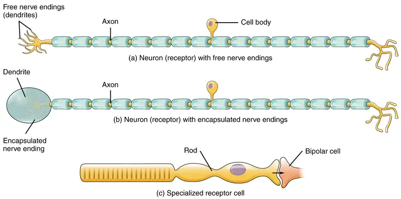
Another way that receptors can be classified is based on their location relative to the stimuli. An exteroceptor is a receptor that is located near a stimulus in the external environment, such as the somatosensory receptors that are located in the skin. An interoceptor is one that interprets stimuli from internal organs and tissues, such as the receptors that sense the increase in blood pressure in the aorta or carotid sinus. Finally, a proprioceptor is a receptor located near a moving part of the body, such as a muscle, that interprets the positions of the tissues as they move.
Functional Receptor Types¶
A third classification of receptors is by how the receptor transduces stimuli into membrane potential changes. Stimuli are of three general types. Some stimuli are ions and macromolecules that affect transmembrane receptor proteins when these chemicals diffuse across the cell membrane. Some stimuli are physical variations in the environment that affect receptor cell membrane potentials. Other stimuli include the electromagnetic radiation from visible light. For humans, the only electromagnetic energy that is perceived by our eyes is visible light. Some other organisms have receptors that humans lack, such as the heat sensors of snakes, the ultraviolet light sensors of bees, or magnetic receptors in migratory birds.
Receptor cells can be further categorized on the basis of the type of stimuli they transduce. Chemical stimuli can be interpreted by a chemoreceptor that interprets chemical stimuli, such as an object’s taste or smell. Osmoreceptors respond to solute concentrations of body fluids. Additionally, pain is primarily a chemical sense that interprets the presence of chemicals from tissue damage, or similar intense stimuli, through a nociceptor. Physical stimuli, such as pressure and vibration, as well as the sensation of sound and body position (balance), are interpreted through a mechanoreceptor. Another physical stimulus that has its own type of receptor is temperature, which is sensed through a thermoreceptor that is either sensitive to temperatures above (heat) or below (cold) normal body temperature.
Sensory Modalities¶
Ask anyone what the senses are, and they are likely to list the five major senses—taste, smell, touch, hearing, and sight. However, these are not all of the senses. The most obvious omission from this list is balance. Also, what is referred to simply as touch can be further subdivided into pressure, vibration, stretch, and hair-follicle position, on the basis of the type of mechanoreceptors that perceive these touch sensations. Other overlooked senses include temperature perception by thermoreceptors and pain perception by nociceptors.
Within the realm of physiology, senses can be classified as either general or specific. A general sense is one that is distributed throughout the body and has receptor cells within the structures of other organs. Mechanoreceptors in the skin, muscles, or the walls of blood vessels are examples of this type. General senses often contribute to the sense of touch, as described above, or to proprioception (body position) and kinesthesia (body movement), or to a visceral sense (sense associated with the internal organs), which is most important to autonomic functions. A special sense is one that has a specific organ devoted to it, namely the eye, inner ear, tongue, or nose.
Each of the senses is referred to as a sensory modality. Modality refers to the way that information is encoded, which is similar to the idea of transduction. The main sensory modalities can be described on the basis of how each is transduced. The chemical senses are taste and smell. The general sense that is usually referred to as touch includes chemical sensation in the form of nociception, or pain. Pressure, vibration, muscle stretch, and the movement of hair by an external stimulus, are all sensed by mechanoreceptors. Hearing and balance are also sensed by mechanoreceptors. Finally, vision involves the activation of photoreceptors.
Listing all the different sensory modalities, which can number as many as 17, involves separating the five major senses into more specific categories, or submodalities, of the larger sense. An individual sensory modality represents the sensation of a specific type of stimulus. For example, the general sense of touch, which is known as somatosensation, can be separated into light pressure, deep pressure, vibration, itch, pain, temperature, or hair movement.
Gustation (Taste)¶
Only a few recognized submodalities exist within the sense of taste, or gustation. Until recently, only four tastes were recognized: sweet, salty, sour, and bitter. Research at the turn of the 20th century led to recognition of the fifth taste, umami, during the mid-1980s. Umami is a Japanese word that means “delicious taste,” and is often translated to mean savory. Very recent research has suggested that there may also be a sixth taste for fats, or lipids.
Gustation is the special sense associated with the tongue. The surface of the tongue, along with the rest of the oral cavity, is lined by a stratified squamous epithelium. Raised bumps called papillae (singular = papilla) contain the structures for gustatory transduction. There are four types of papillae, based on their appearance (Figure 14.3): circumvallate, foliate, filiform, and fungiform. Within the structure of the papillae are taste buds that contain specialized gustatory receptor cells for the transduction of taste stimuli. These receptor cells are sensitive to the chemicals contained within foods that are ingested, and they release neurotransmitters based on the amount of the chemical in the food. Neurotransmitters from the gustatory cells can activate sensory neurons in the facial, glossopharyngeal, and vagus cranial nerves.
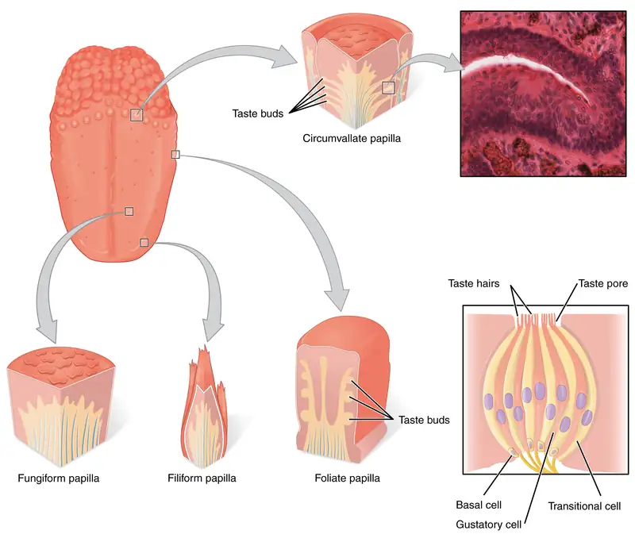
Salty taste is simply the perception of sodium ions (Na+) in the saliva. When you eat something salty, the salt crystals dissociate into the component ions Na+ and Cl–, which dissolve into the saliva in your mouth. The Na+ concentration becomes high outside the gustatory cells, creating a strong concentration gradient that drives the diffusion of the ion into the cells. The entry of Na+ into these cells results in the depolarization of the cell membrane and the generation of a receptor potential.
Sour taste is the perception of H+ concentration. Just as with sodium ions in salty flavors, these hydrogen ions enter the cell and trigger depolarization. Sour flavors are, essentially, the perception of acids in our food. Increasing hydrogen ion concentrations in the saliva (lowering saliva pH) triggers progressively stronger graded potentials in the gustatory cells. For example, orange juice—which contains citric acid—will taste sour because it has a pH value of approximately 3. Of course, it is often sweetened so that the sour taste is masked.
The first two tastes (salty and sour) are triggered by the cations Na+ and H+. The other tastes result from food molecules binding to a G protein–coupled receptor. A G protein signal transduction system ultimately leads to depolarization of the gustatory cell. The sweet taste is the sensitivity of gustatory cells to the presence of glucose dissolved in the saliva. Other monosaccharides such as fructose, or artificial sweeteners such as aspartame (NutraSweet™), saccharine, or sucralose (Splenda™) also activate the sweet receptors. The affinity for each of these molecules varies, and some will taste sweeter than glucose because they bind to the G protein–coupled receptor differently.
Bitter taste is similar to sweet in that food molecules bind to G protein–coupled receptors. However, there are a number of different ways in which this can happen because there are a large diversity of bitter-tasting molecules. Some bitter molecules depolarize gustatory cells, whereas others hyperpolarize gustatory cells. Likewise, some bitter molecules increase G protein activation within the gustatory cells, whereas other bitter molecules decrease G protein activation. The specific response depends on which molecule is binding to the receptor.
One major group of bitter-tasting molecules are alkaloids. Alkaloids are nitrogen containing molecules that are commonly found in bitter-tasting plant products, such as coffee, hops (in beer), tannins (in wine), tea, and aspirin. By containing toxic alkaloids, the plant is less susceptible to microbe infection and less attractive to herbivores.
Therefore, the function of bitter taste may primarily be related to stimulating the gag reflex to avoid ingesting poisons. Because of this, many bitter foods that are normally ingested are often combined with a sweet component to make them more palatable (cream and sugar in coffee, for example). The highest concentration of bitter receptors appear to be in the posterior tongue, where a gag reflex could still spit out poisonous food.
The taste known as umami is often referred to as the savory taste. Like sweet and bitter, it is based on the activation of G protein–coupled receptors by a specific molecule. The molecule that activates this receptor is the amino acid L-glutamate. Therefore, the umami flavor is often perceived while eating protein-rich foods. Not surprisingly, dishes that contain meat are often described as savory.
Once the gustatory cells are activated by the taste molecules, they release neurotransmitters onto the dendrites of sensory neurons. These neurons are part of the facial and glossopharyngeal cranial nerves, as well as a component within the vagus nerve dedicated to the gag reflex. The facial nerve connects to taste buds in the anterior two thirds of the tongue. The glossopharyngeal nerve connects to taste buds in the posterior one third of the tongue. The vagus nerve connects to taste buds in the extreme posterior of the tongue, verging on the pharynx, which are more sensitive to noxious stimuli such as bitterness.
Interactive
Watch this video to learn about Dr. Danielle Reed of the Monell Chemical Senses Center in Philadelphia, Pennsylvania, who became interested in science at an early age because of her sensory experiences. She recognized that her sense of taste was unique compared with other people she knew. Now, she studies the genetic differences between people and their sensitivities to taste stimuli. In the video, there is a brief image of a person sticking out their tongue, which has been covered with a colored dye. This is how Dr. Reed is able to visualize and count papillae on the surface of the tongue. People fall into two groups known as “tasters” and “non-tasters” based on the density of papillae on their tongue, which also indicates the number of taste buds. Non-tasters can taste food, but they are not as sensitive to certain tastes, such as bitterness. Dr. Reed discovered that she is a non-taster, which explains why she perceived bitterness differently than other people she knew. Are you very sensitive to tastes? Can you see any similarities among the members of your family?
Olfaction (Smell)¶
Like taste, the sense of smell, or olfaction, is also responsive to chemical stimuli. The olfactory receptor neurons are located in a small region within the superior nasal cavity (Figure 14.4). This region is referred to as the olfactory epithelium and contains bipolar sensory neurons. Each olfactory sensory neuron has dendrites that extend from the apical surface of the epithelium into the mucus lining the cavity. As airborne molecules are inhaled through the nose, they pass over the olfactory epithelial region and dissolve into the mucus. These odorant molecules bind to proteins that keep them dissolved in the mucus and help transport them to the olfactory dendrites. The odorant–protein complex binds to a receptor protein within the cell membrane of an olfactory dendrite. These receptors are G protein–coupled, and will produce a graded membrane potential in the olfactory neurons.
The axon of an olfactory neuron extends from the basal surface of the epithelium, through an olfactory foramen in the cribriform plate of the ethmoid bone, and into the brain. The group of axons called the olfactory tract connect to the olfactory bulb on the ventral surface of the frontal lobe. From there, the axons split to travel to several brain regions. Some travel to the cerebrum, specifically to the primary olfactory cortex that is located in the inferior and medial areas of the temporal lobe. Others project to structures within the limbic system and hypothalamus, where smells become associated with long-term memory and emotional responses. This is how certain smells trigger emotional memories, such as the smell of food associated with one’s birthplace. Smell is the one sensory modality that does not synapse in the thalamus before connecting to the cerebral cortex. This intimate connection between the olfactory system and the cerebral cortex is one reason why smell can be a potent trigger of memories and emotion.
The nasal epithelium, including the olfactory cells, can be harmed by airborne toxic chemicals. Therefore, the olfactory neurons are regularly replaced within the nasal epithelium, after which the axons of the new neurons must find their appropriate connections in the olfactory bulb. These new axons grow along the axons that are already in place in the cranial nerve.
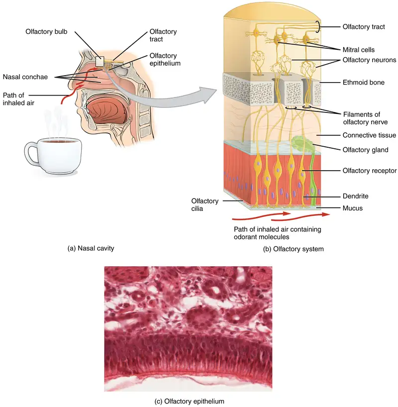
Disorders of the Olfactory System: Anosmia
Blunt force trauma to the face, such as that common in many car accidents, can lead to the loss of the olfactory nerve, and subsequently, loss of the sense of smell. This condition is known as anosmia. When the frontal lobe of the brain moves relative to the ethmoid bone, the olfactory tract axons may be sheared apart. Professional fighters often experience anosmia because of repeated trauma to face and head. In addition, certain pharmaceuticals, such as antibiotics, can cause anosmia by killing all the olfactory neurons at once. If no axons are in place within the olfactory nerve, then the axons from newly formed olfactory neurons have no guide to lead them to their connections within the olfactory bulb. There are temporary causes of anosmia, as well, such as those caused by inflammatory responses related to respiratory infections or allergies.
Loss of the sense of smell can result in food tasting bland. A person with an impaired sense of smell may require additional spice and seasoning levels for food to be tasted. Anosmia may also be related to some presentations of mild depression, because the loss of enjoyment of food may lead to a general sense of despair.
The ability of olfactory neurons to replace themselves decreases with age, leading to age-related anosmia. This explains why some elderly people salt their food more than younger people do. However, this increased sodium intake can increase blood volume and blood pressure, increasing the risk of cardiovascular diseases in the elderly.
Audition (Hearing)¶
Hearing, or audition, is the transduction of sound waves into a neural signal that is made possible by the structures of the ear (Figure 14.5). The large, fleshy structure on the lateral aspect of the head is known as the auricle. Some sources will also refer to this structure as the pinna, though that term is more appropriate for a structure that can be moved, such as the external ear of a cat. The C-shaped curves of the auricle direct sound waves toward the auditory canal. The canal enters the skull through the external auditory meatus of the temporal bone. At the end of the auditory canal is the tympanic membrane, or ear drum, which vibrates after it is struck by sound waves. The auricle, ear canal, and tympanic membrane are often referred to as the external ear. The middle ear consists of a space spanned by three small bones called the ossicles. The three ossicles are the malleus, incus, and stapes, which are Latin names that roughly translate to hammer, anvil, and stirrup. The malleus is attached to the tympanic membrane and articulates with the incus. The incus, in turn, articulates with the stapes. The stapes is then attached to the inner ear, where the sound waves will be transduced into a neural signal. The middle ear is connected to the pharynx through the Eustachian tube, which helps equilibrate air pressure across the tympanic membrane. The tube is normally closed but will pop open when the muscles of the pharynx contract during swallowing or yawning.
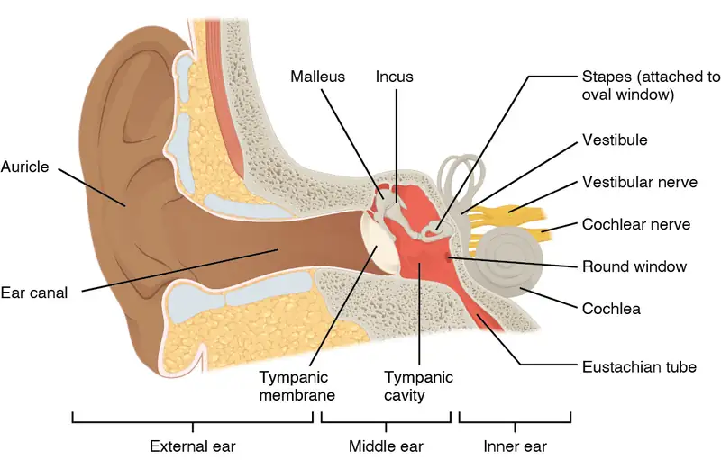
The inner ear is often described as a bony labyrinth, as it is composed of a series of canals embedded within the temporal bone. It has two separate regions, the cochlea and the vestibule, which are responsible for hearing and balance, respectively. The neural signals from these two regions are relayed to the brain stem through separate fiber bundles. However, these two distinct bundles travel together from the inner ear to the brain stem as the vestibulocochlear nerve. Sound is transduced into neural signals within the cochlear region of the inner ear, which contains the sensory neurons of the spiral ganglia. These ganglia are located within the spiral-shaped cochlea of the inner ear. The cochlea is attached to the stapes through the oval window.
The oval window is located at the beginning of a fluid-filled tube within the cochlea called the scala vestibuli. The scala vestibuli extends from the oval window, travelling above the cochlear duct, which is the central cavity of the cochlea that contains the sound-transducing neurons. At the uppermost tip of the cochlea, the scala vestibuli curves over the top of the cochlear duct. The fluid-filled tube, now called the scala tympani, returns to the base of the cochlea, this time travelling under the cochlear duct. The scala tympani ends at the round window, which is covered by a membrane that contains the fluid within the scala. As vibrations of the ossicles travel through the oval window, the fluid of the scala vestibuli and scala tympani moves in a wave-like motion. The frequency of the fluid waves match the frequencies of the sound waves (Figure 14.6). The membrane covering the round window will bulge out or pucker in with the movement of the fluid within the scala tympani.
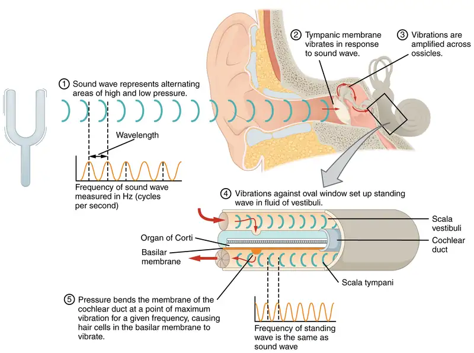
A cross-sectional view of the cochlea shows that the scala vestibuli and scala tympani run along both sides of the cochlear duct (Figure 14.7). The cochlear duct contains several organs of Corti, which transduce the wave motion of the two scala into neural signals. The organs of Corti lie on top of the basilar membrane, which is the side of the cochlear duct located between the organs of Corti and the scala tympani. As the fluid waves move through the scala vestibuli and scala tympani, the basilar membrane moves at a specific spot, depending on the frequency of the waves. Higher frequency waves move the region of the basilar membrane that is close to the base of the cochlea. Lower frequency waves move the region of the basilar membrane that is near the tip of the cochlea.
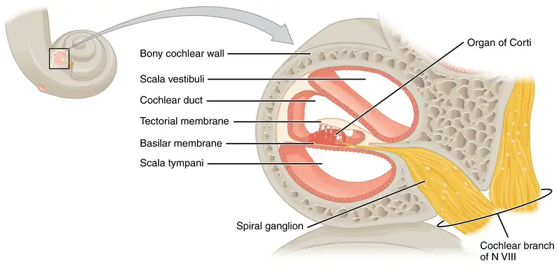
The organs of Corti contain hair cells, which are named for the hair-like stereocilia extending from the cell’s apical surfaces (Figure 14.8). The stereocilia are an array of microvilli-like structures arranged from tallest to shortest. Protein fibers tether adjacent hairs together within each array, such that the array will bend in response to movements of the basilar membrane. The stereocilia extend up from the hair cells to the overlying tectorial membrane, which is attached medially to the organ of Corti. When the pressure waves from the scala move the basilar membrane, the tectorial membrane slides across the stereocilia. This bends the stereocilia either toward or away from the tallest member of each array. When the stereocilia bend toward the tallest member of their array, tension in the protein tethers opens ion channels in the hair cell membrane. This will depolarize the hair cell membrane, triggering nerve impulses that travel down the afferent nerve fibers attached to the hair cells. When the stereocilia bend toward the shortest member of their array, the tension on the tethers slackens and the ion channels close. When no sound is present, and the stereocilia are standing straight, a small amount of tension still exists on the tethers, keeping the membrane potential of the hair cell slightly depolarized.
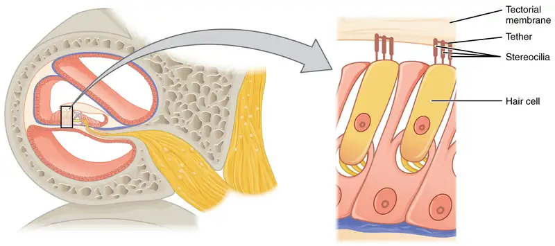
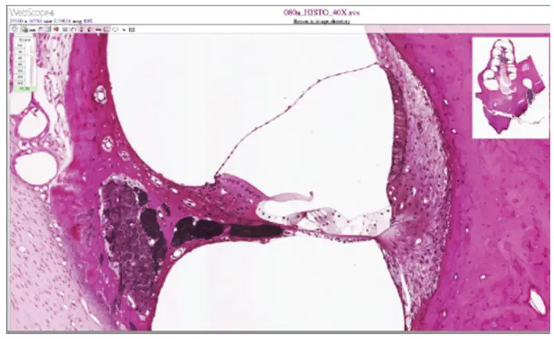
Interactive
View the University of Michigan WebScope to explore the tissue sample in greater detail. The basilar membrane is the thin membrane that extends from the central core of the cochlea to the edge. What is anchored to this membrane so that they can be activated by movement of the fluids within the cochlea?
As stated above, a given region of the basilar membrane will only move if the incoming sound is at a specific frequency. Because the tectorial membrane only moves where the basilar membrane moves, the hair cells in this region will also only respond to sounds of this specific frequency. Therefore, as the frequency of a sound changes, different hair cells are activated all along the basilar membrane. The cochlea encodes auditory stimuli for frequencies between 20 and 20,000 Hz, which is the range of sound that human ears can detect. The unit of Hertz measures the frequency of sound waves in terms of cycles produced per second. Frequencies as low as 20 Hz are detected by hair cells at the apex, or tip, of the cochlea. Frequencies in the higher ranges of 20 KHz are encoded by hair cells at the base of the cochlea, close to the round and oval windows (Figure 14.10). Most auditory stimuli contain a mixture of sounds at a variety of frequencies and intensities (represented by the amplitude of the sound wave). The hair cells along the length of the cochlear duct, which are each sensitive to a particular frequency, allow the cochlea to separate auditory stimuli by frequency, just as a prism separates visible light into its component colors.
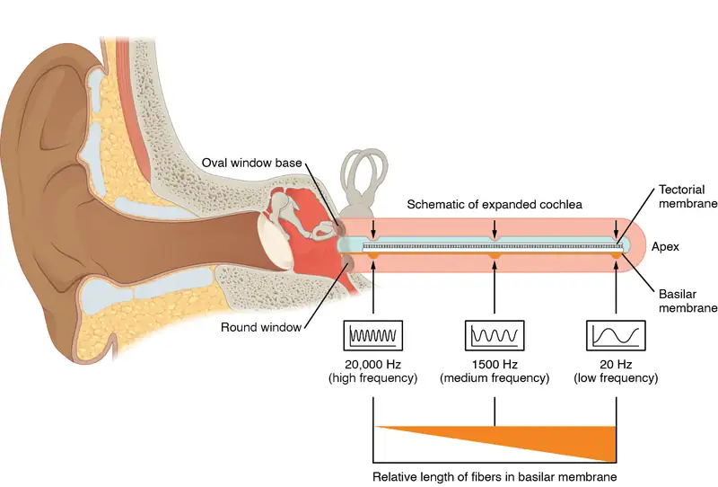
Interactive
Watch this video to learn more about how the structures of the ear convert sound waves into a neural signal by moving the “hairs,” or stereocilia, of the cochlear duct. Specific locations along the length of the duct encode specific frequencies, or pitches. The brain interprets the meaning of the sounds we hear as music, speech, noise, etc. Which ear structures are responsible for the amplification and transfer of sound from the external ear to the inner ear?
Interactive
Watch this animation to learn more about the inner ear and to see the cochlea unroll, with the base at the back of the image and the apex at the front. Specific wavelengths of sound cause specific regions of the basilar membrane to vibrate, much like the keys of a piano produce sound at different frequencies. Based on the animation, where do frequencies—from high to low pitches—cause activity in the hair cells within the cochlear duct?
Equilibrium (Balance)¶
Along with audition, the inner ear is responsible for encoding information about equilibrium, the sense of balance. A similar mechanoreceptor—a hair cell with stereocilia—senses head position, head movement, and whether our bodies are in motion. These cells are located within the vestibule of the inner ear. Head position is sensed by the utricle and saccule, whereas head movement is sensed by the semicircular canals. The neural signals generated in the vestibular ganglion are transmitted through the vestibulocochlear nerve to the brain stem and cerebellum.
The utricle and saccule are both largely composed of macula tissue (plural = maculae). The macula is composed of hair cells surrounded by support cells. The stereocilia of the hair cells extend into a viscous gel called the otolithic membrane (Figure 14.11). On top of the otolithic membrane is a layer of calcium carbonate crystals, called otoliths. The otoliths essentially make the otolithic membrane top-heavy. The otolithic membrane moves separately from the macula in response to head movements. Tilting the head causes the otolithic membrane to slide over the macula in the direction of gravity. The moving otolithic membrane, in turn, bends the stereocilia, causing some hair cells to depolarize as others hyperpolarize. The exact position of the head is interpreted by the brain based on the pattern of hair-cell depolarization.
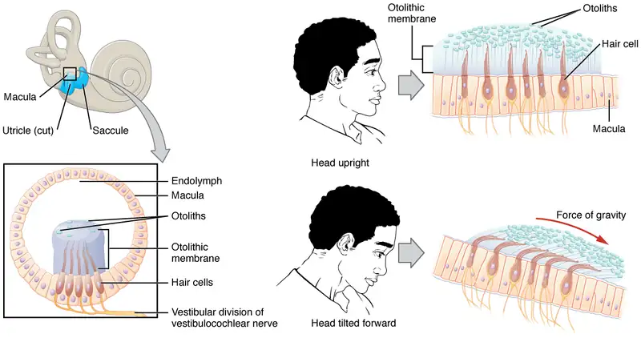
The semicircular canals are three ring-like extensions of the vestibule. One is oriented in the horizontal plane, whereas the other two are oriented in the vertical plane. The anterior and posterior vertical canals are oriented at approximately 45 degrees relative to the sagittal plane (Figure 14.12). The base of each semicircular canal, where it meets with the vestibule, connects to an enlarged region known as the ampulla. The ampulla contains the hair cells that respond to rotational movement, such as turning the head while saying “no.” The stereocilia of these hair cells extend into the cupula, a membrane that attaches to the top of the ampulla. As the head rotates in a plane parallel to the semicircular canal, the fluid lags, deflecting the cupula in the direction opposite to the head movement. The semicircular canals contain several ampullae, with some oriented horizontally and others oriented vertically. By comparing the relative movements of both the horizontal and vertical ampullae, the vestibular system can detect the direction of most head movements within three-dimensional (3-D) space.
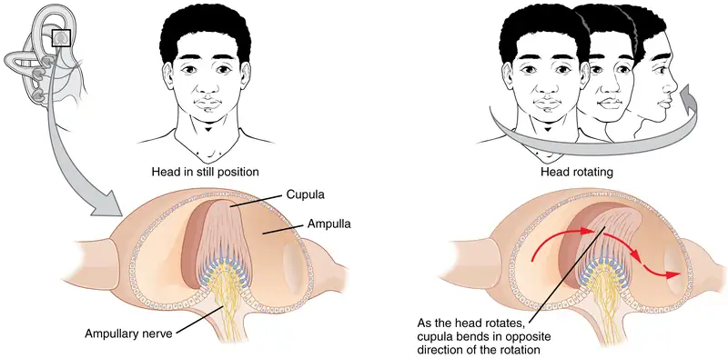
Somatosensation (Touch)¶
Somatosensation is considered a general sense, as opposed to the special senses discussed in this section. Somatosensation is the group of sensory modalities that are associated with touch, proprioception, and interoception. These modalities include pressure, vibration, light touch, tickle, itch, temperature, pain, proprioception, and kinesthesia. This means that its receptors are not associated with a specialized organ, but are instead spread throughout the body in a variety of organs. Many of the somatosensory receptors are located in the skin, but receptors are also found in muscles, tendons, joint capsules, ligaments, and in the walls of visceral organs.
Two types of somatosensory signals that are transduced by free nerve endings are pain and temperature. These two modalities use thermoreceptors and nociceptors to transduce temperature and pain stimuli, respectively. Temperature receptors are stimulated when local temperatures differ from body temperature. Some thermoreceptors are sensitive to just cold and others to just heat. Nociception is the sensation of potentially damaging stimuli. Mechanical, chemical, or thermal stimuli beyond a set threshold will elicit painful sensations. Stressed or damaged tissues release chemicals that activate receptor proteins in the nociceptors. For example, the sensation of heat associated with spicy foods involves capsaicin, the active molecule in hot peppers. Capsaicin molecules bind to a transmembrane ion channel in nociceptors that is sensitive to temperatures above 37°C. The dynamics of capsaicin binding with this transmembrane ion channel is unusual in that the molecule remains bound for a long time. Because of this, it will decrease the ability of other stimuli to elicit pain sensations through the activated nociceptor. For this reason, capsaicin can be used as a topical analgesic, such as in products such as Icy Hot™.
If you drag your finger across a textured surface, the skin of your finger will vibrate. Such low frequency vibrations are sensed by mechanoreceptors called Merkel cells, also known as type I cutaneous mechanoreceptors. Merkel cells are located in the stratum basale of the epidermis. Deep pressure and vibration is transduced by lamellated (Pacinian) corpuscles, which are receptors with encapsulated endings found deep in the dermis, or subcutaneous tissue. Light touch is transduced by the encapsulated endings known as tactile (Meissner) corpuscles. Follicles are also wrapped in a plexus of nerve endings known as the hair follicle plexus. These nerve endings detect the movement of hair at the surface of the skin, such as when an insect may be walking along the skin. Stretching of the skin is transduced by stretch receptors known as bulbous corpuscles. Bulbous corpuscles are also known as Ruffini corpuscles, or type II cutaneous mechanoreceptors.
Other somatosensory receptors are found in the joints and muscles. Stretch receptors monitor the stretching of tendons, muscles, and the components of joints. For example, have you ever stretched your muscles before or after exercise and noticed that you can only stretch so far before your muscles spasm back to a less stretched state? This spasm is a reflex that is initiated by stretch receptors to avoid muscle tearing. Such stretch receptors can also prevent over-contraction of a muscle. In skeletal muscle tissue, these stretch receptors are called muscle spindles. Golgi tendon organs similarly transduce the stretch levels of tendons. Bulbous corpuscles are also present in joint capsules, where they measure stretch in the components of the skeletal system within the joint. The types of nerve endings, their locations, and the stimuli they transduce are presented in Table 14.1.
Table 14.1 *No corresponding eponymous name.
| Mechanoreceptors of Somatosensation | |||
|---|---|---|---|
| Name | Historical (eponymous) name | Location(s) | Stimuli |
| Free nerve endings | * | Dermis, cornea, tongue, joint capsules, visceral organs | Pain, temperature, mechanical deformation |
| Mechanoreceptors | Merkel’s discs | Epidermal–dermal junction, mucosal membranes | Low frequency vibration (5–15 Hz) |
| Bulbous corpuscle | Ruffini’s corpuscle | Dermis, joint capsules | Stretch |
| Tactile corpuscle | Meissner’s corpuscle | Papillary dermis, especially in the fingertips and lips | Light touch, vibrations below 50 Hz |
| Lamellated corpuscle | Pacinian corpuscle | Deep dermis, subcutaneous tissue | Deep pressure, high-frequency vibration (around 250 Hz) |
| Hair follicle plexus | * | Wrapped around hair follicles in the dermis | Movement of hair |
| Muscle spindle | * | In line with skeletal muscle fibers | Muscle contraction and stretch |
| Tendon stretch organ | Golgi tendon organ | In line with tendons | Stretch of tendons |
Vision¶
Vision is the special sense of sight that is based on the transduction of light stimuli received through the eyes. The eyes are located within either orbit in the skull. The bony orbits surround the eyeballs, protecting them and anchoring the soft tissues of the eye (Figure 14.13). The eyelids, with lashes at their leading edges, help to protect the eye from abrasions by blocking particles that may land on the surface of the eye. The inner surface of each lid is a thin membrane known as the palpebral conjunctiva. The conjunctiva extends over the white areas of the eye (the sclera), connecting the eyelids to the eyeball. Tears are produced by the lacrimal gland, located just inside the orbit, superior and lateral to the eyeball. Tears produced by this gland flow through the lacrimal ducts, then over the surface of the eyeball and conjunctiva to the medial corner of the eye, washing away foreign particles. Excess tears eventually flow into the nasal cavity.
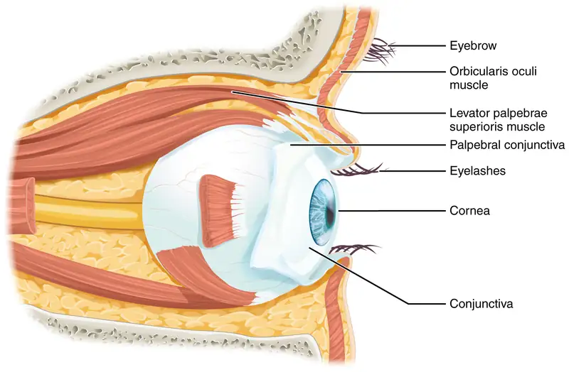
Movement of the eye within the orbit is accomplished by the contraction of six extraocular muscles that originate from the bones of the orbit and insert into the surface of the eyeball (Figure 14.14). Four of the muscles are arranged at the cardinal points around the eye and are named for those locations. They are the superior rectus, medial rectus, inferior rectus, and lateral rectus. When each of these muscles contract, the eye moves toward the contracting muscle. For example, when the superior rectus contracts, the eye rotates to look up. The superior oblique originates at the posterior orbit, near the origin of the four rectus muscles. However, the tendon of the oblique muscles threads through a pulley-like piece of cartilage known as the trochlea. The tendon inserts obliquely into the superior surface of the eye. The angle of the tendon through the trochlea means that contraction of the superior oblique rotates the eye laterally. The inferior oblique muscle originates from the floor of the orbit and inserts into the inferolateral surface of the eye. When it contracts, it laterally rotates the eye, in opposition to the superior oblique. Rotation of the eye by the two oblique muscles is necessary because the eye is not perfectly aligned on the sagittal plane. When the eye looks up or down, the eye must also rotate slightly to compensate for the superior rectus pulling at approximately a 20-degree angle, rather than straight up. The same is true for the inferior rectus, which is compensated by contraction of the inferior oblique. A seventh muscle in the orbit is the levator palpebrae superioris, which is responsible for elevating and retracting the upper eyelid, a movement that usually occurs in concert with elevation of the eye by the superior rectus (see Figure 14.13).
The extraocular muscles are innervated by three cranial nerves. The lateral rectus, which causes abduction of the eye, is innervated by the abducens nerve. The superior oblique is innervated by the trochlear nerve. All of the other muscles are innervated by the oculomotor nerve, as is the levator palpebrae superioris. The motor nuclei of these cranial nerves connect to the brain stem, which coordinates eye movements.
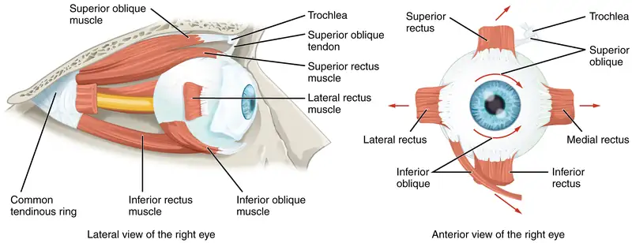
The eye itself is a hollow sphere composed of three layers of tissue. The outermost layer is the fibrous tunic, which includes the white sclera and clear cornea. The sclera accounts for five sixths of the surface of the eye, most of which is not visible, though humans are unique compared with many other species in having so much of the “white of the eye” visible (Figure 14.15). The transparent cornea covers the anterior part of the eye. It allows light to enter, and along with the lens, focuses light onto the retina. The middle layer of the eye is the vascular tunic, which is mostly composed of the choroid, ciliary body, and iris. The choroid is a layer of highly vascularized connective tissue that provides a blood supply to the eyeball. The choroid is posterior to the ciliary body, a muscular structure that is attached to the lens by suspensory ligaments, or zonule fibers. These two structures bend the lens, allowing it to focus light on the back of the eye. Overlaying the ciliary body, and visible in the anterior eye, is the iris—the colored part of the eye. The iris is a smooth muscle that opens or closes the pupil, which is the hole at the center of the eye that allows light to enter. The iris constricts the pupil in response to bright light and dilates the pupil in response to dim light. The innermost layer of the eye is the neural tunic, or retina, which contains the nervous tissue responsible for photoreception.
The eye is also divided into two cavities: the anterior cavity and the posterior cavity. The anterior cavity is the space between the cornea and lens, including the iris and ciliary body. It is filled with a watery fluid called the aqueous humor. The posterior cavity is the space behind the lens that extends to the posterior side of the interior eyeball, where the retina is located. The posterior cavity is filled with a more viscous fluid called the vitreous humor.
The retina is composed of several layers and contains specialized cells for the initial processing of visual stimuli. The photoreceptors (rods and cones) change their membrane potential when stimulated by light energy. The change in membrane potential alters the amount of neurotransmitter that the photoreceptor cells release onto bipolar cells in the outer synaptic layer. It is the bipolar cell in the retina that connects a photoreceptor to a retinal ganglion cell (RGC) in the inner synaptic layer. There, amacrine cells additionally contribute to retinal processing before an action potential is produced by the RGC. The axons of RGCs, which lie at the innermost layer of the retina, collect at the optic disc and leave the eye as the optic nerve (see Figure 14.15). Because these axons pass through the retina, there are no photoreceptors at the very back of the eye, where the optic nerve begins. This creates a “blind spot” in the retina, and a corresponding blind spot in our visual field.
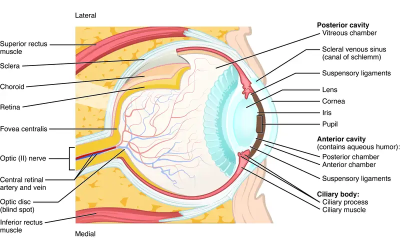
Note that the photoreceptors in the retina (rods and cones) are located behind the axons, RGCs, bipolar cells, and retinal blood vessels. A significant amount of light is absorbed by these structures before the light reaches the photoreceptor cells. However, at the exact center of the retina is a small area known as the fovea. At the fovea, the retina lacks the supporting cells and blood vessels, and only contains photoreceptors. Therefore, visual acuity, or the sharpness of vision, is greatest at the fovea. This is because the fovea is where the least amount of incoming light is absorbed by other retinal structures (see Figure 14.15). As one moves in either direction from this central point of the retina, visual acuity drops significantly. In addition, each photoreceptor cell of the fovea is connected to a single RGC. Therefore, this RGC does not have to integrate inputs from multiple photoreceptors, which reduces the accuracy of visual transduction. Toward the edges of the retina, several photoreceptors converge on RGCs (through the bipolar cells) up to a ratio of 50 to 1. The difference in visual acuity between the fovea and peripheral retina is easily evidenced by looking directly at a word in the middle of this paragraph. The visual stimulus in the middle of the field of view falls on the fovea and is in the sharpest focus. Without moving your eyes off that word, notice that words at the beginning or end of the paragraph are not in focus. The images in your peripheral vision are focused by the peripheral retina, and have vague, blurry edges and words that are not as clearly identified. As a result, a large part of the neural function of the eyes is concerned with moving the eyes and head so that important visual stimuli are centered on the fovea.
Light falling on the retina causes chemical changes to pigment molecules in the photoreceptors, ultimately leading to a change in the activity of the RGCs. Photoreceptor cells have two parts, the inner segment and the outer segment (Figure 14.16). The inner segment contains the nucleus and other common organelles of a cell, whereas the outer segment is a specialized region in which photoreception takes place. There are two types of photoreceptors—rods and cones—which differ in the shape of their outer segment. The rod-shaped outer segments of the rod photoreceptor contain a stack of membrane-bound discs that contain the photosensitive pigment rhodopsin. The cone-shaped outer segments of the cone photoreceptor contain their photosensitive pigments in infoldings of the cell membrane. There are three cone photopigments, called opsins, which are each sensitive to a particular wavelength of light. The wavelength of visible light determines its color. The pigments in human eyes are specialized in perceiving three different primary colors: red, green, and blue.
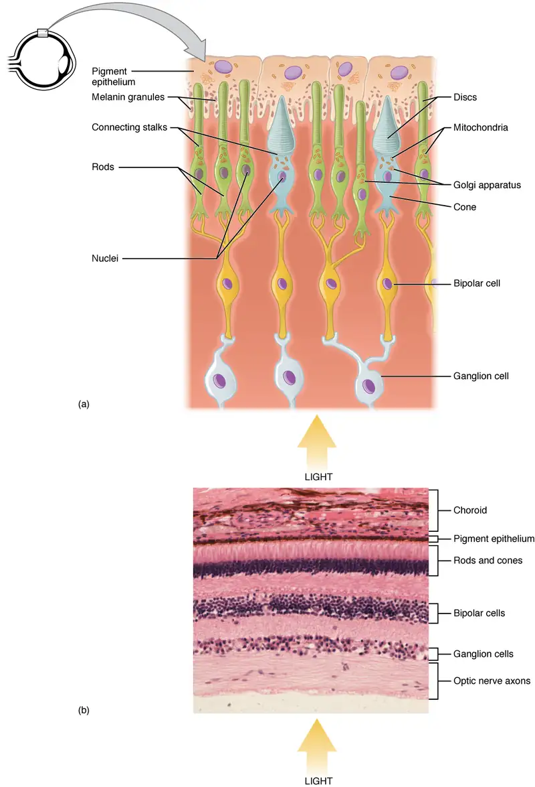
At the molecular level, visual stimuli cause changes in the photopigment molecule that lead to changes in membrane potential of the photoreceptor cell. A single unit of light is called a photon, which is described in physics as a packet of energy with properties of both a particle and a wave. The energy of a photon is represented by its wavelength, with each wavelength of visible light corresponding to a particular color. Visible light is electromagnetic radiation with a wavelength between 380 and 720 nm. Wavelengths of electromagnetic radiation longer than 720 nm fall into the infrared range, whereas wavelengths shorter than 380 nm fall into the ultraviolet range. Light with a wavelength of 380 nm is blue whereas light with a wavelength of 720 nm is dark red. All other colors fall between red and blue at various points along the wavelength scale.
Opsin pigments are actually transmembrane proteins that contain a cofactor known as retinal. Retinal is a hydrocarbon molecule related to vitamin A. When a photon hits retinal, the long hydrocarbon chain of the molecule is biochemically altered. Specifically, photons cause some of the double-bonded carbons within the chain to switch from a cis to a trans conformation. This process is called photoisomerization. Before interacting with a photon, retinal’s flexible double-bonded carbons are in the cis conformation. This molecule is referred to as 11-cis-retinal. A photon interacting with the molecule causes the flexible double-bonded carbons to change to the trans- conformation, forming all-trans-retinal, which has a straight hydrocarbon chain (Figure 14.17).
The shape change of retinal in the photoreceptors initiates visual transduction in the retina. Activation of retinal and the opsin proteins result in activation of a G protein. The G protein changes the membrane potential of the photoreceptor cell, which then releases less neurotransmitter into the outer synaptic layer of the retina. Until the retinal molecule is changed back to the 11-cis-retinal shape, the opsin cannot respond to light energy, which is called bleaching. When a large group of photopigments is bleached, the retina will send information as if opposing visual information is being perceived. After a bright flash of light, afterimages are usually seen in negative. The photoisomerization is reversed by a series of enzymatic changes so that the retinal responds to more light energy.
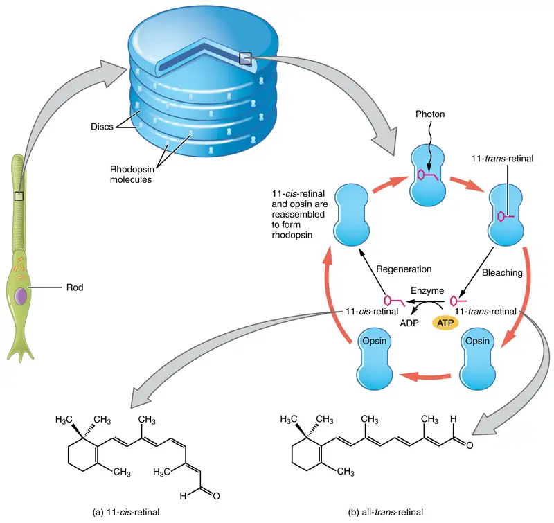
The opsins are sensitive to limited wavelengths of light. Rhodopsin, the photopigment in rods, is most sensitive to light at a wavelength of 498 nm. The three color opsins have peak sensitivities of 564 nm, 534 nm, and 420 nm corresponding roughly to the primary colors of red, green, and blue (Figure 14.18). The absorbance of rhodopsin in the rods is much more sensitive than in the cone opsins; specifically, rods are sensitive to vision in low light conditions, and cones are sensitive to brighter conditions. In normal sunlight, rhodopsin will be constantly bleached while the cones are active. In a darkened room, there is not enough light to activate cone opsins, and vision is entirely dependent on rods. Rods are so sensitive to light that a single photon can result in an action potential from a rod’s corresponding RGC.
The three types of cone opsins, being sensitive to different wavelengths of light, provide us with color vision. By comparing the activity of the three different cones, the brain can extract color information from visual stimuli. For example, a bright blue light that has a wavelength of approximately 450 nm would activate the “red” cones minimally, the “green” cones marginally, and the “blue” cones predominantly. The relative activation of the three different cones is calculated by the brain, which perceives the color as blue. However, cones cannot react to low-intensity light, and rods do not sense the color of light. Therefore, our low-light vision is—in essence—in grayscale. In other words, in a dark room, everything appears as a shade of gray. If you think that you can see colors in the dark, it is most likely because your brain knows what color something is and is relying on that memory.
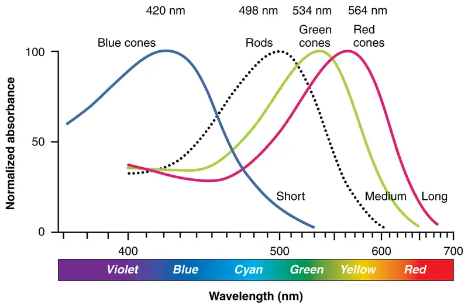
Interactive
Watch this video to learn more about a transverse section through the brain that depicts the visual pathway from the eye to the occipital cortex. The first half of the pathway is the projection from the RGCs through the optic nerve to the lateral geniculate nucleus in the thalamus on either side. This first fiber in the pathway synapses on a thalamic cell that then projects to the visual cortex in the occipital lobe where “seeing,” or visual perception, takes place. This video gives an abbreviated overview of the visual system by concentrating on the pathway from the eyes to the occipital lobe. The video makes the statement (at 0:45) that “specialized cells in the retina called ganglion cells convert the light rays into electrical signals.” What aspect of retinal processing is simplified by that statement? Explain your answer.
Sensory Nerves¶
Once any sensory cell transduces a stimulus into a nerve impulse, that impulse has to travel along axons to reach the CNS. In many of the special senses, the axons leaving the sensory receptors have a topographical arrangement, meaning that the location of the sensory receptor relates to the location of the axon in the nerve. For example, in the retina, axons from RGCs in the fovea are located at the center of the optic nerve, where they are surrounded by axons from the more peripheral RGCs.
Spinal Nerves¶
Generally, spinal nerves contain afferent axons from sensory receptors in the periphery, such as from the skin, mixed with efferent axons travelling to the muscles or other effector organs. As the spinal nerve nears the spinal cord, it splits into dorsal and ventral roots. The dorsal root contains only the axons of sensory neurons, whereas the ventral roots contain only the axons of the motor neurons. Some of the branches will synapse with local neurons in the dorsal root ganglion, posterior (dorsal) horn, or even the anterior (ventral) horn, at the level of the spinal cord where they enter. Other branches will travel a short distance up or down the spine to interact with neurons at other levels of the spinal cord. A branch may also turn into the posterior (dorsal) column of the white matter to connect with the brain. For the sake of convenience, we will use the terms ventral and dorsal in reference to structures within the spinal cord that are part of these pathways. This will help to underscore the relationships between the different components. Typically, spinal nerve systems that connect to the brain are contralateral, in that the right side of the body is connected to the left side of the brain and the left side of the body to the right side of the brain.
Cranial Nerves¶
Cranial nerves convey specific sensory information from the head and neck directly to the brain. Whereas spinal information is contralateral, cranial nerve systems, with some exceptions, are mostly ipsilateral, meaning that a cranial nerve on the right side of the head is connected to the right side of the brain. That said, sensory pathways are complex and cranial nerves may project ipsilaterally, contralaterally, bilaterally, or a combination of these. Some cranial nerves contain only sensory axons, such as the olfactory, optic, and vestibulocochlear nerves. Other cranial nerves contain both sensory and motor axons, including the trigeminal, facial, glossopharyngeal, and vagus nerves (however, the vagus nerve is not associated with the somatic nervous system). The general senses of somatosensation for the face travel through the trigeminal system.
14.2 Central Processing¶
Learning Objectives
By the end of this section, you will be able to:
- Describe the pathways that sensory systems follow into the central nervous system
- Differentiate between the two major ascending pathways in the spinal cord
- Describe the pathway of somatosensory input from the face and compare it to the ascending pathways in the spinal cord
- Explain topographical representations of sensory information in at least two systems
- Describe two pathways of visual processing and the functions associated with each
Sensory Pathways¶
Specific regions of the CNS coordinate different somatic processes using sensory inputs and motor outputs of peripheral nerves. A simple case is a reflex caused by a synapse between a dorsal sensory neuron axon and a motor neuron in the ventral horn. More complex arrangements are possible to integrate peripheral sensory information with higher processes. The important regions of the CNS that play a role in somatic processes can be separated into the spinal cord brain stem, diencephalon, cerebral cortex, and subcortical structures.
Spinal Cord and Brain Stem¶
A sensory pathway that carries peripheral sensations to the brain is referred to as an ascending pathway, or ascending tract. The various sensory modalities each follow specific pathways through the CNS. Tactile and other somatosensory stimuli activate receptors in the skin, muscles, tendons, and joints throughout the entire body. However, the somatosensory pathways are divided into two separate systems on the basis of the location of the receptor neurons. Somatosensory stimuli from below the neck pass along the sensory pathways of the spinal cord, whereas somatosensory stimuli from the head and neck travel through the cranial nerves—specifically, the trigeminal system.
The dorsal column system (sometimes referred to as the dorsal column–medial lemniscus) and the spinothalamic tract are two major pathways that bring sensory information to the brain (Figure 14.19). The sensory pathways in each of these systems are composed of three successive neurons.
The dorsal column system begins with the axon of a dorsal root ganglion neuron entering the dorsal root and joining the dorsal column white matter in the spinal cord. As axons of this pathway enter the dorsal column, they take on a positional arrangement so that axons from lower levels of the body position themselves medially, whereas axons from upper levels of the body position themselves laterally. The dorsal column is separated into two component tracts, the fasciculus gracilis that contains axons from the legs and lower body, and the fasciculus cuneatus that contains axons from the upper body and arms.
The axons in the dorsal column terminate in the nuclei of the medulla, where each synapses with the second neuron in their respective pathway. The nucleus gracilis is the target of fibers in the fasciculus gracilis, whereas the nucleus cuneatus is the target of fibers in the fasciculus cuneatus. The second neuron in the system projects from one of the two nuclei and then decussates, or crosses the midline of the medulla. These axons then continue to ascend the brain stem as a bundle called the medial lemniscus. These axons terminate in the thalamus, where each synapses with the third neuron in their respective pathway. The third neuron in the system projects its axons to the postcentral gyrus of the cerebral cortex, where somatosensory stimuli are initially processed and the conscious perception of the stimulus occurs.
The spinothalamic tract also begins with neurons in a dorsal root ganglion. These neurons extend their axons to the dorsal horn, where they synapse with the second neuron in their respective pathway. The name “spinothalamic” comes from this second neuron, which has its cell body in the spinal cord gray matter and connects to the thalamus. Axons from these second neurons decussate within the spinal cord, then they ascend to the brain and enter the thalamus where each synapses with the third neuron in its respective pathway. The neurons in the thalamus then project their axons to the somatosensory cortex of the postcentral gyrus of the cerebral cortex.
These two systems are similar in that they both begin with dorsal root ganglion cells, as with most general sensory information. The dorsal column system is primarily responsible for touch sensations and proprioception, whereas the spinothalamic tract pathway is primarily responsible for pain and temperature sensations. Another similarity is that the second neurons in both of these pathways are contralateral, because they project across the midline to the other side of the brain or spinal cord. In the dorsal column system, this decussation takes place in the brain stem; in the spinothalamic pathway, it takes place in the spinal cord at the same spinal cord level at which the information entered. The third neurons in the two pathways are essentially the same. In both, the second neuron synapses in the thalamus, and the thalamic neuron projects to the somatosensory cortex.
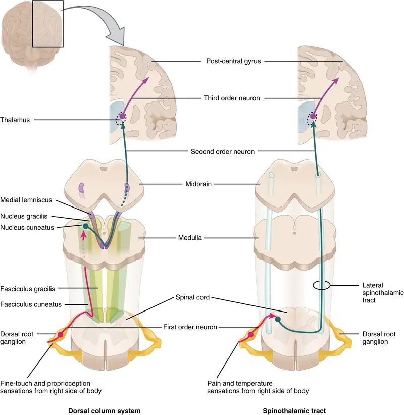
The trigeminal pathway carries somatosensory information from the face, head, mouth, and nasal cavity. As with the previously discussed nerve tracts, the sensory pathways of the trigeminal pathway each involve three successive neurons. First, axons from the trigeminal ganglion enter the brain stem at the level of the pons. These axons project to one of three locations. The spinal trigeminal nucleus of the medulla receives information similar to that carried by spinothalamic tract, such as pain and temperature sensations. Other axons go to either the chief sensory nucleus in the pons or the mesencephalic nuclei in the midbrain. These nuclei receive information like that carried by the dorsal column system, such as touch, pressure, vibration, and proprioception. Axons from the second neuron decussate and ascend to the thalamus along the trigeminothalamic tract. In the thalamus, each axon synapses with the third neuron in its respective pathway. Axons from the third neuron then project from the thalamus to the primary somatosensory cortex of the cerebrum.
The sensory pathway for gustation travels along the facial and glossopharyngeal cranial nerves, which synapse with neurons of the solitary nucleus in the brain stem. Axons from the solitary nucleus then project to the ventral posterior nucleus of the thalamus. Finally, axons from the ventral posterior nucleus project to the gustatory cortex of the cerebral cortex, where taste is processed and consciously perceived.
The sensory pathway for audition travels along the vestibulocochlear nerve, which synapses with neurons in the cochlear nuclei of the superior medulla. Within the brain stem, input from either ear is combined to extract location information from the auditory stimuli. Whereas the initial auditory stimuli received at the cochlea strictly represent the frequency—or pitch—of the stimuli, the locations of sounds can be determined by comparing information arriving at both ears.
Sound localization is a feature of central processing in the auditory nuclei of the brain stem. Sound localization is achieved by the brain calculating the interaural time difference and the interaural intensity difference. A sound originating from a specific location will arrive at each ear at different times, unless the sound is directly in front of the listener. If the sound source is slightly to the left of the listener, the sound will arrive at the left ear microseconds before it arrives at the right ear (Figure 14.20). This time difference is an example of an interaural time difference. Also, the sound will be slightly louder in the left ear than in the right ear because some of the sound waves reaching the opposite ear are blocked by the head. This is an example of an interaural intensity difference.
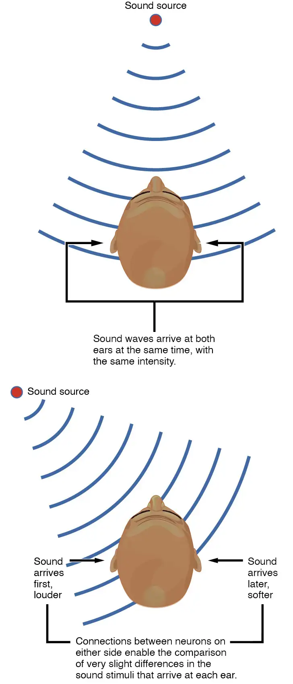
Auditory processing continues on to a nucleus in the midbrain called the inferior colliculus. Axons from the inferior colliculus project to two locations, the thalamus and the superior colliculus. The medial geniculate nucleus of the thalamus receives the auditory information and then projects that information to the auditory cortex in the temporal lobe of the cerebral cortex. The superior colliculus receives input from the visual and somatosensory systems, as well as the ears, to initiate stimulation of the muscles that turn the head and neck toward the auditory stimulus.
Balance is coordinated through the vestibular system, the nerves of which are composed of axons from the vestibular ganglion that carries information from the utricle, saccule, and semicircular canals. The system contributes to controlling head and neck movements in response to vestibular signals. An important function of the vestibular system is coordinating eye and head movements to maintain visual attention. Most of the axons terminate in the vestibular nuclei of the medulla. Some axons project from the vestibular ganglion directly to the cerebellum, with no intervening synapse in the vestibular nuclei. The cerebellum is primarily responsible for initiating movements on the basis of equilibrium information.
Neurons in the vestibular nuclei project their axons to targets in the brain stem. One target is the reticular formation, which influences respiratory and cardiovascular functions in relation to body movements. A second target of the axons of neurons in the vestibular nuclei is the spinal cord, which initiates the spinal reflexes involved with posture and balance. To assist the visual system, fibers of the vestibular nuclei project to the oculomotor, trochlear, and abducens nuclei to influence signals sent along the cranial nerves. These connections constitute the pathway of the vestibulo-ocular reflex (VOR), which compensates for head and body movement by stabilizing images on the retina (Figure 14.21). Finally, the vestibular nuclei project to the thalamus to join the proprioceptive pathway of the dorsal column system, allowing conscious perception of equilibrium.
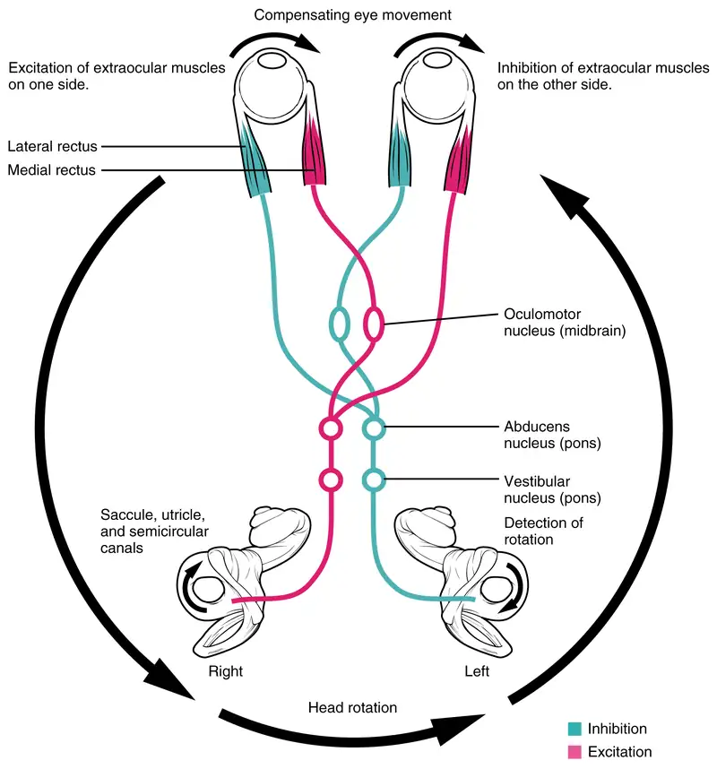
The connections of the optic nerve are more complicated than those of other cranial nerves. Instead of the connections being between each eye and the brain, visual information is segregated between the left and right sides of the visual field. In addition, some of the information from one side of the visual field projects to the opposite side of the brain. Within each eye, the axons projecting from the medial side of the retina decussate at the optic chiasm. For example, the axons from the medial retina of the left eye cross over to the right side of the brain at the optic chiasm. However, within each eye, the axons projecting from the lateral side of the retina do not decussate. For example, the axons from the lateral retina of the right eye project back to the right side of the brain. Therefore the left field of view of each eye is processed on the right side of the brain, whereas the right field of view of each eye is processed on the left side of the brain (Figure 14.22).
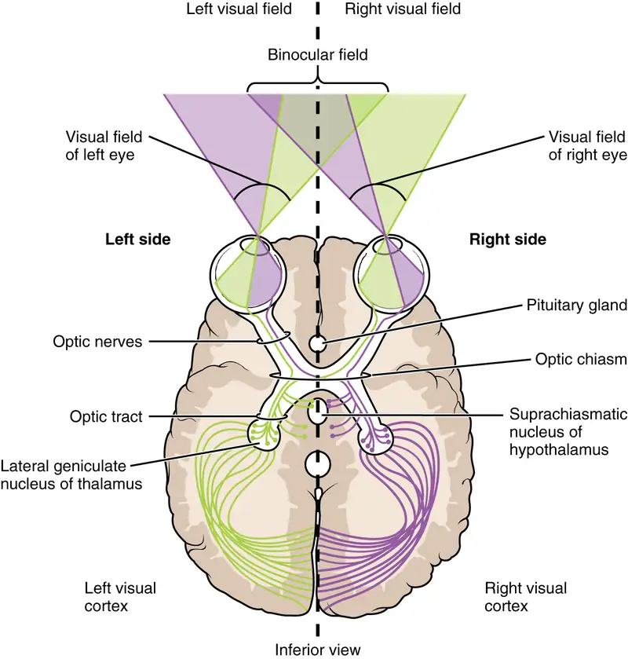
A unique clinical presentation that relates to this anatomic arrangement is the loss of lateral peripheral vision, known as bilateral hemianopia. This is different from “tunnel vision” because the superior and inferior peripheral fields are not lost. Visual field deficits can be disturbing for a patient, but in this case, the cause is not within the visual system itself. A growth of the pituitary gland presses against the optic chiasm and interferes with signal transmission. However, the axons projecting to the same side of the brain are unaffected. Therefore, the patient loses the outermost areas of their field of vision and cannot see objects to their right and left.
Extending from the optic chiasm, the axons of the visual system are referred to as the optic tract instead of the optic nerve. The optic tract has three major targets, two in the diencephalon and one in the midbrain. The connection between the eyes and diencephalon is demonstrated during development, in which the neural tissue of the retina differentiates from that of the diencephalon by the growth of the secondary vesicles. The connections of the retina into the CNS are a holdover from this developmental association. The majority of the connections of the optic tract are to the thalamus—specifically, the lateral geniculate nucleus. Axons from this nucleus then project to the visual cortex of the cerebrum, located in the occipital lobe. Another target of the optic tract is the superior colliculus.
In addition, a very small number of RGC axons project from the optic chiasm to the suprachiasmatic nucleus of the hypothalamus. These RGCs are photosensitive, in that they respond to the presence or absence of light. Unlike the photoreceptors, however, these photosensitive RGCs cannot be used to perceive images. By simply responding to the absence or presence of light, these RGCs can send information about day length. The perceived proportion of sunlight to darkness establishes the circadian rhythm of our bodies, allowing certain physiological events to occur at approximately the same time every day.
Diencephalon¶
The diencephalon is beneath the cerebrum and includes the thalamus and hypothalamus. In the somatic nervous system, the thalamus is an important relay for communication between the cerebrum and the rest of the nervous system. The hypothalamus has both somatic and autonomic functions. In addition, the hypothalamus communicates with the limbic system, which controls emotions and memory functions.
Sensory input to the thalamus comes from most of the special senses and ascending somatosensory tracts. Each sensory system is relayed through a particular nucleus in the thalamus. The thalamus is a required transfer point for most sensory tracts that reach the cerebral cortex, where conscious sensory perception begins. The one exception to this rule is the olfactory system. The olfactory tract axons from the olfactory bulb project directly to the cerebral cortex, along with the limbic system and hypothalamus.
The thalamus is a collection of several nuclei that can be categorized into three anatomical groups. White matter running through the thalamus defines the three major regions of the thalamus, which are an anterior nucleus, a medial nucleus, and a lateral group of nuclei. The anterior nucleus serves as a relay between the hypothalamus and the emotion and memory-producing limbic system. The medial nuclei serve as a relay for information from the limbic system and basal ganglia to the cerebral cortex. This allows memory creation during learning, but also determines alertness. The special and somatic senses connect to the lateral nuclei, where their information is relayed to the appropriate sensory cortex of the cerebrum.
Cortical Processing¶
As described earlier, many of the sensory axons are positioned in the same way as their corresponding receptor cells in the body. This allows identification of the position of a stimulus on the basis of which receptor cells are sending information. The cerebral cortex also maintains this sensory topography in the particular areas of the cortex that correspond to the position of the receptor cells. The somatosensory cortex provides an example in which, in essence, the locations of the somatosensory receptors in the body are mapped onto the somatosensory cortex. This mapping is often depicted using a sensory homunculus (Figure 14.23).
The term homunculus comes from the Latin word for “little man” and refers to a map of the human body that is laid across a portion of the cerebral cortex. In the somatosensory cortex, the external genitals, feet, and lower legs are represented on the medial face of the gyrus within the longitudinal fissure. As the gyrus curves out of the fissure and along the surface of the parietal lobe, the body map continues through the thighs, hips, trunk, shoulders, arms, and hands. The head and face are just lateral to the fingers as the gyrus approaches the lateral sulcus. The representation of the body in this topographical map is medial to lateral from the lower to upper body. It is a continuation of the topographical arrangement seen in the dorsal column system, where axons from the lower body are carried in the fasciculus gracilis, whereas axons from the upper body are carried in the fasciculus cuneatus. As the dorsal column system continues into the medial lemniscus, these relationships are maintained. Also, the head and neck axons running from the trigeminal nuclei to the thalamus run adjacent to the upper body fibers. The connections through the thalamus maintain topography such that the anatomic information is preserved. Note that this correspondence does not result in a perfectly miniature scale version of the body, but rather exaggerates the more sensitive areas of the body, such as the fingers and lower face. Less sensitive areas of the body, such as the shoulders and back, are mapped to smaller areas on the cortex.
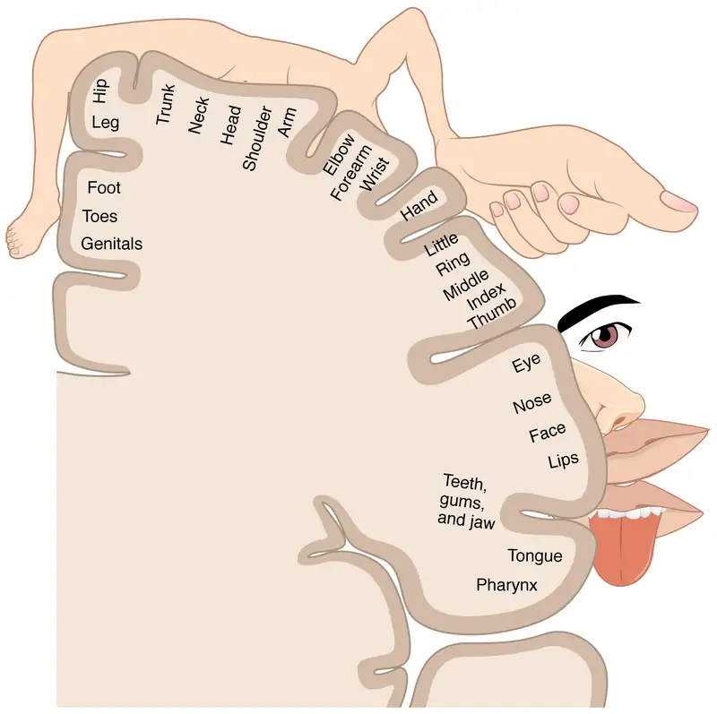
Likewise, the topographic relationship between the retina and the visual cortex is maintained throughout the visual pathway. The visual field is projected onto the two retinae, as described above, with sorting at the optic chiasm. The right peripheral visual field falls on the medial portion of the right retina and the lateral portion of the left retina. The right medial retina then projects across the midline through the optic chiasm. This results in the right visual field being processed in the left visual cortex. Likewise, the left visual field is processed in the right visual cortex (see Figure 14.22). Though the chiasm is helping to sort right and left visual information, superior and inferior visual information is maintained topographically in the visual pathway. Light from the superior visual field falls on the inferior retina, and light from the inferior visual field falls on the superior retina. This topography is maintained such that the superior region of the visual cortex processes the inferior visual field and vice versa. Therefore, the visual field information is inverted and reversed as it enters the visual cortex—up is down, and left is right. However, the cortex processes the visual information such that the final conscious perception of the visual field is correct. The topographic relationship is evident in that information from the foveal region of the retina is processed in the center of the primary visual cortex. Information from the peripheral regions of the retina are correspondingly processed toward the edges of the visual cortex. Similar to the exaggerations in the sensory homunculus of the somatosensory cortex, the foveal-processing area of the visual cortex is disproportionately larger than the areas processing peripheral vision.
In an experiment performed in the 1960s, subjects wore prism glasses so that the visual field was inverted before reaching the eye. On the first day of the experiment, subjects would duck when walking up to a table, thinking it was suspended from the ceiling. However, after a few days of acclimation, the subjects behaved as if everything were represented correctly. Therefore, the visual cortex is somewhat flexible in adapting to the information it receives from our eyes (Figure 14.24).
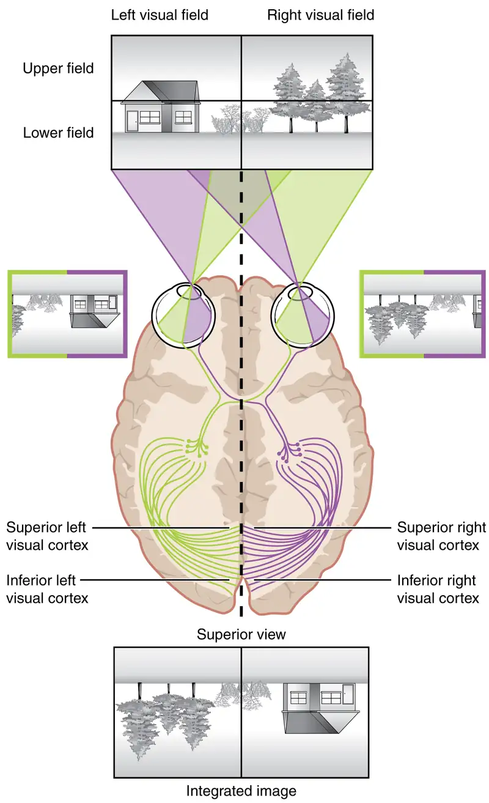
The cortex has been described as having specific regions that are responsible for processing specific information; there is the visual cortex, somatosensory cortex, gustatory cortex, etc. However, our experience of these senses is not divided. Instead, we experience what can be referred to as a seamless percept. Our perceptions of the various sensory modalities—though distinct in their content—are integrated by the brain so that we experience the world as a continuous whole.
In the cerebral cortex, sensory processing begins at the primary sensory cortex, then proceeds to an association area, and finally, into a multimodal integration area. For example, the visual pathway projects from the retinae through the thalamus to the primary visual cortex in the occipital lobe. This area is primarily in the medial wall within the longitudinal fissure. Here, visual stimuli begin to be recognized as basic shapes. Edges of objects are recognized and built into more complex shapes. Also, inputs from both eyes are compared to extract depth information. Because of the overlapping field of view between the two eyes, the brain can begin to estimate the distance of stimuli based on binocular depth cues.
Interactive
Watch this video to learn more about how the brain perceives 3-D motion. Similar to how retinal disparity offers 3-D moviegoers a way to extract 3-D information from the two-dimensional visual field projected onto the retina, the brain can extract information about movement in space by comparing what the two eyes see. If movement of a visual stimulus is leftward in one eye and rightward in the opposite eye, the brain interprets this as movement toward (or away) from the face along the midline. If both eyes see an object moving in the same direction, but at different rates, what would that mean for spatial movement?
Everyday Connection: Depth Perception, 3-D Movies, and Optical Illusions
The visual field is projected onto the retinal surface, where photoreceptors transduce light energy into neural signals for the brain to interpret. The retina is a two-dimensional surface, so it does not encode three-dimensional information. However, we can perceive depth. How is that accomplished?
Two ways in which we can extract depth information from the two-dimensional retinal signal are based on monocular cues and binocular cues, respectively. Monocular depth cues are those that are the result of information within the two-dimensional visual field. One object that overlaps another object has to be in front. Relative size differences are also a cue. For example, if a basketball appears larger than the basket, then the basket must be further away. On the basis of experience, we can estimate how far away the basket is. Binocular depth cues compare information represented in the two retinae because they do not see the visual field exactly the same.
The centers of the two eyes are separated by a small distance, which is approximately 6 to 6.5 cm in most people. Because of this offset, visual stimuli do not fall on exactly the same spot on both retinae unless we are fixated directly on them and they fall on the fovea of each retina. All other objects in the visual field, either closer or farther away than the fixated object, will fall on different spots on the retina. When vision is fixed on an object in space, closer objects will fall on the lateral retina of each eye, and more distant objects will fall on the medial retina of either eye (Figure 14.25). This is easily observed by holding a finger up in front of your face as you look at a more distant object. You will see two images of your finger that represent the two disparate images that are falling on either retina.
These depth cues, both monocular and binocular, can be exploited to make the brain think there are three dimensions in two-dimensional information. This is the basis of 3-D movies. The projected image on the screen is two dimensional, but it has disparate information embedded in it. The 3-D glasses that are available at the theater filter the information so that only one eye sees one version of what is on the screen, and the other eye sees the other version. If you take the glasses off, the image on the screen will have varying amounts of blur because both eyes are seeing both layers of information, and the third dimension will not be evident. Some optical illusions can take advantage of depth cues as well, though those are more often using monocular cues to fool the brain into seeing different parts of the scene as being at different depths.
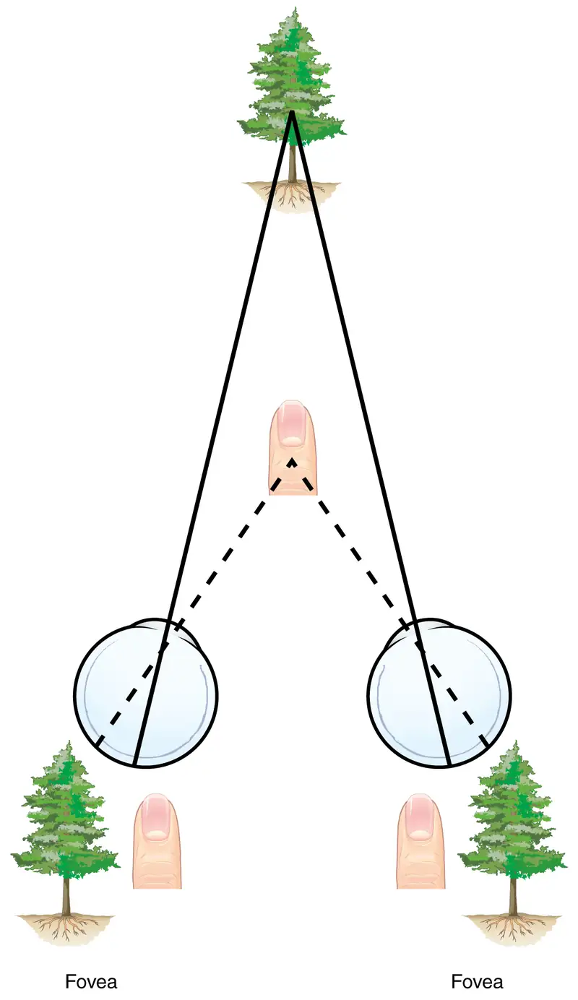
There are two main regions that surround the primary cortex that are usually referred to as areas V2 and V3 (the primary visual cortex is area V1). These surrounding areas are the visual association cortex. The visual association regions develop more complex visual perceptions by adding color and motion information. The information processed in these areas is then sent to regions of the temporal and parietal lobes. Visual processing has two separate streams of processing: one into the temporal lobe and one into the parietal lobe. These are the ventral and dorsal streams, respectively (Figure 14.26). The ventral stream identifies visual stimuli and their significance. Because the ventral stream uses temporal lobe structures, it begins to interact with the non-visual cortex and may be important in visual stimuli becoming part of memories. The dorsal stream locates objects in space and helps in guiding movements of the body in response to visual inputs. The dorsal stream enters the parietal lobe, where it interacts with somatosensory cortical areas that are important for our perception of the body and its movements. The dorsal stream can then influence frontal lobe activity where motor functions originate.
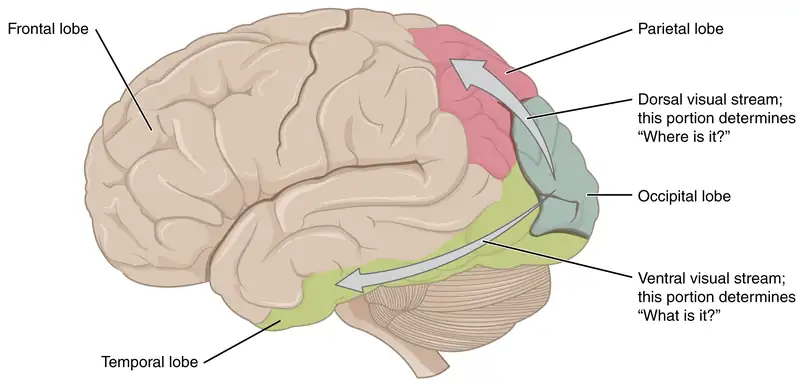
Disorders of the Brain: Prosopagnosia
The failures of sensory perception can be unusual and debilitating. A particular sensory deficit that inhibits an important social function of humans is prosopagnosia, or face blindness. The word comes from the Greek words prosopa, that means “faces,” and agnosia, that means “not knowing.” Some people may feel that they cannot recognize people easily by their faces. However, a person with prosopagnosia cannot recognize the most recognizable people in their respective cultures. They would not recognize the face of a celebrity, an important historical figure, or even a family member like their mother. They may not even recognize their own face.
Prosopagnosia can be caused by trauma to the brain, or it can be present from birth. The exact cause of prosopagnosia and the reason that it happens to some people is unclear. A study of the brains of people born with the deficit found that a specific region of the brain, the anterior fusiform gyrus of the temporal lobe, is often underdeveloped. This region of the brain is concerned with the recognition of visual stimuli and its possible association with memories. Though the evidence is not yet definitive, this region is likely to be where facial recognition occurs.
Though this can be a devastating condition, people who suffer from it can get by—often by using other cues to recognize the people they see. Often, the sound of a person’s voice, or the presence of unique cues such as distinct facial features (a mole, for example) or hair color can help the sufferer recognize a familiar person. In the video on prosopagnosia provided in this section, a woman is shown having trouble recognizing celebrities, family members, and herself. In some situations, she can use other cues to help her recognize faces.
Interactive
The inability to recognize people by their faces is a troublesome problem. It can be caused by trauma, or it may be inborn. Watch this video to learn more about a person who lost the ability to recognize faces as the result of an injury. She cannot recognize the faces of close family members or herself. What other information can a person suffering from prosopagnosia use to figure out whom they are seeing?
14.3 Motor Responses¶
Learning Objectives
By the end of this section, you will be able to:
- List the components of the basic processing stream for the motor system
- Describe the pathway of descending motor commands from the cortex to the skeletal muscles
- Compare different descending pathways, both by structure and function
- Explain the initiation of movement from the neurological connections
- Describe several reflex arcs and their functional roles
The defining characteristic of the somatic nervous system is that it controls skeletal muscles. Somatic senses inform the nervous system about the external environment, but the response to that is through voluntary muscle movement. The term “voluntary” suggests that there is a conscious decision to make a movement. However, some aspects of the somatic system use voluntary muscles without conscious control. One example is the ability of our breathing to switch to unconscious control while we are focused on another task. However, the muscles that are responsible for the basic process of breathing are also utilized for speech, which is entirely voluntary.
Cortical Responses¶
Let’s start with sensory stimuli that have been registered through receptor cells and the information relayed to the CNS along ascending pathways. In the cerebral cortex, the initial processing of sensory perception progresses to associative processing and then integration in multimodal areas of cortex. These levels of processing can lead to the incorporation of sensory perceptions into memory, but more importantly, they lead to a response. The completion of cortical processing through the primary, associative, and integrative sensory areas initiates a similar progression of motor processing, usually in different cortical areas.
Whereas the sensory cortical areas are located in the occipital, temporal, and parietal lobes, motor functions are largely controlled by the frontal lobe (See Figure 13.7). The most anterior regions of the frontal lobe—the prefrontal areas—are important for executive functions, which are those cognitive functions that lead to goal-directed behaviors. These higher cognitive processes include working memory, which has been called a “mental scratch pad,” that can help organize and represent information that is not in the immediate environment. The prefrontal lobe is responsible for aspects of attention, such as inhibiting distracting thoughts and actions so that a person can focus on a goal and direct behavior toward achieving that goal.
The functions of the prefrontal cortex are integral to the personality of an individual, because it is largely responsible for what a person intends to do and how they accomplish those plans. A famous case of damage to the prefrontal cortex is that of Phineas Gage, dating back to 1848. He was a railroad worker who had a metal spike impale his prefrontal cortex (Figure 14.27). He survived the accident, but according to second-hand accounts, his personality changed drastically. Friends described him as no longer acting like himself. Whereas he was a hardworking, amiable man before the accident, he turned into an irritable, temperamental, and lazy man after the accident. Many of the accounts of his change may have been inflated in the retelling, and some behavior was likely attributable to alcohol used as a pain medication. However, the accounts suggest that some aspects of his personality did change. Also, there is new evidence that though his life changed dramatically, he was able to become a functioning stagecoach driver, suggesting that the brain has the ability to recover even from major trauma such as this.
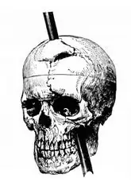
Secondary Motor Cortices¶
In generating motor responses, the executive functions of the prefrontal cortex will need to initiate actual movements. One way to define the prefrontal area is any region of the frontal lobe that does not elicit movement when electrically stimulated. These are primarily in the anterior part of the frontal lobe. The regions of the frontal lobe that remain are the regions of the cortex that produce movement. The prefrontal areas project into the secondary motor cortices, which include the premotor cortex and the supplemental motor area.
Two important regions that assist in planning and coordinating movements are located adjacent to the primary motor cortex. The premotor cortex is more lateral, whereas the supplemental motor area is more medial and superior. The premotor area aids in controlling movements of the core muscles to maintain posture during movement, whereas the supplemental motor area is hypothesized to be responsible for planning and coordinating movement. The supplemental motor area also manages sequential movements that are based on prior experience (that is, learned movements). Neurons in these areas are most active leading up to the initiation of movement. For example, these areas might prepare the body for the movements necessary to drive a car in anticipation of a traffic light changing.
Adjacent to these two regions are two specialized motor planning centers. The frontal eye fields are responsible for moving the eyes in response to visual stimuli. There are direct connections between the frontal eye fields and the superior colliculus. Also, anterior to the premotor cortex and primary motor cortex is Broca’s area. This area is responsible for controlling movements of the structures of speech production. The area is named after a French surgeon and anatomist who studied patients who could not produce speech. They did not have impairments to understanding speech, only to producing speech sounds, suggesting a damaged or underdeveloped Broca’s area.
Primary Motor Cortex¶
The primary motor cortex is located in the precentral gyrus of the frontal lobe. A neurosurgeon, Walter Penfield, described much of the basic understanding of the primary motor cortex by electrically stimulating the surface of the cerebrum. Penfield would probe the surface of the cortex while the patient was only under local anesthesia so that he could observe responses to the stimulation. This led to the belief that the precentral gyrus directly stimulated muscle movement. We now know that the primary motor cortex receives input from several areas that aid in planning movement, and its principal output stimulates spinal cord neurons to stimulate skeletal muscle contraction.
The primary motor cortex is arranged in a similar fashion to the primary somatosensory cortex, in that it has a topographical map of the body, creating a motor homunculus (see Figure 14.23). The neurons responsible for musculature in the feet and lower legs are in the medial wall of the precentral gyrus, with the thighs, trunk, and shoulder at the crest of the longitudinal fissure. The hand and face are in the lateral face of the gyrus. Also, the relative space allotted for the different regions is exaggerated in muscles that have greater innervation. The greatest amount of cortical space is given to muscles that perform fine, agile movements, such as the muscles of the fingers and the lower face. The “power muscles” that perform coarser movements, such as the buttock and back muscles, occupy much less space on the motor cortex.
Descending Pathways¶
The motor output from the cortex descends into the brain stem and to the spinal cord to control the musculature through motor neurons. Neurons located in the primary motor cortex, named Betz cells, are large cortical neurons that synapse with lower motor neurons in the brain stem or in the spinal cord. The two descending pathways travelled by the axons of Betz cells are the corticobulbar tract and the corticospinal tract, respectively. Both tracts are named for their origin in the cortex and their targets—either the brain stem (the term “bulbar” refers to the brain stem as the bulb, or enlargement, at the top of the spinal cord) or the spinal cord.
These two descending pathways are responsible for the conscious or voluntary movements of skeletal muscles. Any motor command from the primary motor cortex is sent down the axons of the Betz cells to activate lower motor neurons in either the cranial motor nuclei or in the ventral horn of the spinal cord. The axons of the corticobulbar tract are ipsilateral, meaning they project from the cortex to the motor nucleus on the same side of the nervous system. Conversely, the axons of the corticospinal tract are largely contralateral, meaning that they cross the midline of the brain stem or spinal cord and synapse on the opposite side of the body. Therefore, the right motor cortex of the cerebrum controls muscles on the left side of the body, and vice versa.
The corticospinal tract descends from the cortex through the deep white matter of the cerebrum. It then passes between the caudate nucleus and putamen of the basal nuclei as a bundle called the internal capsule. The tract then passes through the midbrain as the cerebral peduncles, after which it burrows through the pons. Upon entering the medulla, the tracts make up the large white matter tract referred to as the pyramids (Figure 14.28). The defining landmark of the medullary-spinal border is the pyramidal decussation, which is where most of the fibers in the corticospinal tract cross over to the opposite side of the brain. At this point, the tract separates into two parts, which have control over different domains of the musculature.
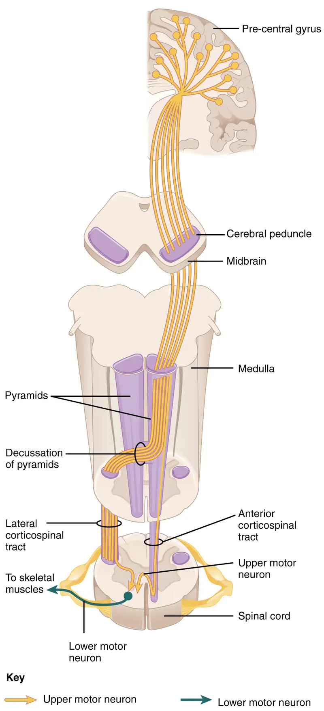
Appendicular Control¶
The lateral corticospinal tract is composed of the fibers that cross the midline at the pyramidal decussation (see Figure 14.28). The axons cross over from the anterior position of the pyramids in the medulla to the lateral column of the spinal cord. These axons are responsible for controlling appendicular muscles.
This influence over the appendicular muscles means that the lateral corticospinal tract is responsible for moving the muscles of the arms and legs. The ventral horn in both the lower cervical spinal cord and the lumbar spinal cord both have wider ventral horns, representing the greater number of muscles controlled by these motor neurons. The cervical enlargement is particularly large because there is greater control over the fine musculature of the upper limbs, particularly of the fingers. The lumbar enlargement is not as significant in appearance because there is less fine motor control of the lower limbs.
Axial Control¶
The anterior corticospinal tract is responsible for controlling the muscles of the body trunk (see Figure 14.28). These axons do not decussate in the medulla. Instead, they remain in an anterior position as they descend the brain stem and enter the spinal cord. These axons then travel to the spinal cord level at which they synapse with a lower motor neuron. Upon reaching the appropriate level, the axons decussate, entering the ventral horn on the opposite side of the spinal cord from which they entered. In the ventral horn, these axons synapse with their corresponding lower motor neurons. The lower motor neurons are located in the medial regions of the ventral horn, because they control the axial muscles of the trunk.
Because movements of the body trunk involve both sides of the body, the anterior corticospinal tract is not entirely contralateral. Some collateral branches of the tract will project into the ipsilateral ventral horn to control synergistic muscles on that side of the body, or to inhibit antagonistic muscles through interneurons within the ventral horn. Through the influence of both sides of the body, the anterior corticospinal tract can coordinate postural muscles in broad movements of the body. These coordinating axons in the anterior corticospinal tract are often considered bilateral, as they are both ipsilateral and contralateral.
Interactive
Watch this video to learn more about the descending motor pathway for the somatic nervous system. The autonomic connections are mentioned, which are covered in another chapter. From this brief video, only some of the descending motor pathway of the somatic nervous system is described. Which division of the pathway is described and which division is left out?
Extrapyramidal Controls¶
Other descending connections between the brain and the spinal cord are called the extrapyramidal system. The name comes from the fact that this system is outside the corticospinal pathway, which includes the pyramids in the medulla. A few pathways originating from the brain stem contribute to this system.
The tectospinal tract projects from the midbrain to the spinal cord and is important for postural movements that are driven by the superior colliculus. The name of the tract comes from an alternate name for the superior colliculus, which is the tectum. The reticulospinal tract connects the reticular system, a diffuse region of gray matter in the brain stem, with the spinal cord. This tract influences trunk and proximal limb muscles related to posture and locomotion. The reticulospinal tract also contributes to muscle tone and influences autonomic functions. The vestibulospinal tract connects the brain stem nuclei of the vestibular system with the spinal cord. This allows posture, movement, and balance to be modulated on the basis of equilibrium information provided by the vestibular system.
The pathways of the extrapyramidal system are influenced by subcortical structures. For example, connections between the secondary motor cortices and the extrapyramidal system modulate spine and cranium movements. The basal nuclei, which are important for regulating movement initiated by the CNS, influence the extrapyramidal system as well as its thalamic feedback to the motor cortex.
The conscious movement of our muscles is more complicated than simply sending a single command from the precentral gyrus down to the proper motor neurons. During the movement of any body part, our muscles relay information back to the brain, and the brain is constantly sending “revised” instructions back to the muscles. The cerebellum is important in contributing to the motor system because it compares cerebral motor commands with proprioceptive feedback. The corticospinal fibers that project to the ventral horn of the spinal cord have branches that also synapse in the pons, which project to the cerebellum. Also, the proprioceptive sensations of the dorsal column system have a collateral projection to the medulla that projects to the cerebellum. These two streams of information are compared in the cerebellar cortex. Conflicts between the motor commands sent by the cerebrum and body position information provided by the proprioceptors cause the cerebellum to stimulate the red nucleus of the midbrain. The red nucleus then sends corrective commands to the spinal cord along the rubrospinal tract. The name of this tract comes from the word for red that is seen in the English word “ruby.”
A good example of how the cerebellum corrects cerebral motor commands can be illustrated by walking in water. An original motor command from the cerebrum to walk will result in a highly coordinated set of learned movements. However, in water, the body cannot actually perform a typical walking movement as instructed. The cerebellum can alter the motor command, stimulating the leg muscles to take larger steps to overcome the water resistance. The cerebellum can make the necessary changes through the rubrospinal tract. Modulating the basic command to walk also relies on spinal reflexes, but the cerebellum is responsible for calculating the appropriate response. When the cerebellum does not work properly, coordination and balance are severely affected. The most dramatic example of this is during the overconsumption of alcohol. Alcohol inhibits the ability of the cerebellum to interpret proprioceptive feedback, making it more difficult to coordinate body movements, such as walking a straight line, or guide the movement of the hand to touch the tip of the nose.
Interactive
Visit this site to read about an elderly woman who starts to lose the ability to control fine movements, such as speech and the movement of limbs. Many of the usual causes were ruled out. It was not a stroke, Parkinson’s disease, diabetes, or thyroid dysfunction. The next most obvious cause was medication, so her pharmacist had to be consulted. The side effect of a drug meant to help her sleep had resulted in changes in motor control. What regions of the nervous system are likely to be the focus of haloperidol side effects?
Ventral Horn Output¶
The somatic nervous system provides output strictly to skeletal muscles. The lower motor neurons, which are responsible for the contraction of these muscles, are found in the ventral horn of the spinal cord. These large, multipolar neurons have a corona of dendrites surrounding the cell body and an axon that extends out of the ventral horn. This axon travels through the ventral nerve root to join the emerging spinal nerve. The axon is relatively long because it needs to reach muscles in the periphery of the body. The diameters of cell bodies may be on the order of hundreds of micrometers to support the long axon; some axons are a meter in length, such as the lumbar motor neurons that innervate muscles in the first digits of the feet.
The axons will also branch to innervate multiple muscle fibers. Together, the motor neuron and all the muscle fibers that it controls make up a motor unit. Motor units vary in size. Some may contain up to 1000 muscle fibers, such as in the quadriceps, or they may only have 10 fibers, such as in an extraocular muscle. The number of muscle fibers that are part of a motor unit corresponds to the precision of control of that muscle. Also, muscles that have finer motor control have more motor units connecting to them, and this requires a larger topographical field in the primary motor cortex.
Motor neuron axons connect to muscle fibers at a neuromuscular junction. This is a specialized synaptic structure at which multiple axon terminals synapse with the muscle fiber sarcolemma. The synaptic end bulbs of the motor neurons secrete acetylcholine, which binds to receptors on the sarcolemma. The binding of acetylcholine opens ligand-gated ion channels, increasing the movement of cations across the sarcolemma. This depolarizes the sarcolemma, initiating muscle contraction. Whereas other synapses result in graded potentials that must reach a threshold in the postsynaptic target, activity at the neuromuscular junction reliably leads to muscle fiber contraction with every nerve impulse received from a motor neuron. However, the strength of contraction and the number of fibers that contract can be affected by the frequency of the motor neuron impulses.
Reflexes¶
This chapter began by introducing reflexes as an example of the basic elements of the somatic nervous system. Simple somatic reflexes do not include the higher centers discussed for conscious or voluntary aspects of movement. Reflexes can be spinal or cranial, depending on the nerves and central components that are involved. The example described at the beginning of the chapter involved heat and pain sensations from a hot stove causing withdrawal of the arm through a connection in the spinal cord that leads to contraction of the biceps brachii. The description of this withdrawal reflex was simplified, for the sake of the introduction, to emphasize the parts of the somatic nervous system. But to consider reflexes fully, more attention needs to be given to this example.
As you withdraw your hand from the stove, you do not want to slow that reflex down. As the biceps brachii contracts, the antagonistic triceps brachii needs to relax. Because the neuromuscular junction is strictly excitatory, the biceps will contract when the motor nerve is active. Skeletal muscles do not actively relax. Instead the motor neuron needs to “quiet down,” or be inhibited. In the hot-stove withdrawal reflex, this occurs through an interneuron in the spinal cord. The interneuron’s cell body is located in the dorsal horn of the spinal cord. The interneuron receives a synapse from the axon of the sensory neuron that detects that the hand is being burned. In response to this stimulation from the sensory neuron, the interneuron then inhibits the motor neuron that controls the triceps brachii. This is done by releasing a neurotransmitter or other signal that hyperpolarizes the motor neuron connected to the triceps brachii, making it less likely to initiate an action potential. With this motor neuron being inhibited, the triceps brachii relaxes. Without the antagonistic contraction, withdrawal from the hot stove is faster and keeps further tissue damage from occurring.
Another example of a withdrawal reflex occurs when you step on a painful stimulus, like a tack or a sharp rock. The nociceptors that are activated by the painful stimulus activate the motor neurons responsible for contraction of the tibialis anterior muscle. This causes dorsiflexion of the foot. An inhibitory interneuron, activated by a collateral branch of the nociceptor fiber, will inhibit the motor neurons of the gastrocnemius and soleus muscles to cancel plantar flexion. An important difference in this reflex is that plantar flexion is most likely in progress as the foot is pressing down onto the tack. Contraction of the tibialis anterior is not the most important aspect of the reflex, as continuation of plantar flexion will result in further damage from stepping onto the tack.
Another type of reflex is a stretch reflex. In this reflex, when a skeletal muscle is stretched, a muscle spindle receptor is activated. The axon from this receptor structure will cause direct contraction of the muscle. A collateral of the muscle spindle fiber will also inhibit the motor neuron of the antagonist muscles. The reflex helps to maintain muscles at a constant length. A common example of this reflex is the knee jerk that is elicited by a rubber hammer struck against the patellar ligament in a physical exam.
A specialized reflex to protect the surface of the eye is the corneal reflex, or the eye blink reflex. When the cornea is stimulated by a tactile stimulus, or even by bright light in a related reflex, blinking is initiated. The sensory component travels through the trigeminal nerve, which carries somatosensory information from the face, or through the optic nerve, if the stimulus is bright light. The motor response travels through the facial nerve and innervates the orbicularis oculi bilaterally. This reflex is commonly tested during a physical exam using an air puff or a gentle touch of a cotton-tipped applicator.
Interactive
Watch this video to learn more about the reflex arc of the corneal reflex. When the right cornea senses a tactile stimulus, what happens to the left eye? Explain your answer.
Interactive
Watch this video to learn more about newborn reflexes. Newborns have a set of reflexes that are expected to have been crucial to survival before the modern age. These reflexes disappear as the baby grows, as some of them may be unnecessary as they age. The video demonstrates a reflex called the Babinski reflex, in which the foot flexes dorsally and the toes splay out when the sole of the foot is lightly scratched. This is normal for newborns, but it is a sign of reduced myelination of the spinal tract in adults. Why would this reflex be a problem for an adult?
Chapter Review¶
Key Terms¶
- alkaloid
- substance, usually from a plant source, that is chemically basic with respect to pH and will stimulate bitter receptors
- amacrine cell
- type of cell in the retina that connects to the bipolar cells near the outer synaptic layer and provides the basis for early image processing within the retina
- ampulla
- in the ear, the structure at the base of a semicircular canal that contains the hair cells and cupula for transduction of rotational movement of the head
- anosmia
- loss of the sense of smell; usually the result of physical disruption of the first cranial nerve
- anterior corticospinal tract
- division of the corticospinal pathway that travels through the ventral (anterior) column of the spinal cord and controls axial musculature through the medial motor neurons in the ventral (anterior) horn
- aqueous humor
- watery fluid that fills the anterior chamber containing the cornea, iris, ciliary body, and lens of the eye
- ascending pathway
- fiber structure that relays sensory information from the periphery through the spinal cord and brain stem to other structures of the brain
- association area
- region of cortex connected to a primary sensory cortical area that further processes the information to generate more complex sensory perceptions
- audition
- sense of hearing
- auricle
- fleshy external structure of the ear
- basilar membrane
- in the ear, the floor of the cochlear duct on which the organ of Corti sits
- Betz cells
- output cells of the primary motor cortex that cause musculature to move through synapses on cranial and spinal motor neurons
- binocular depth cues
- indications of the distance of visual stimuli on the basis of slight differences in the images projected onto either retina
- bipolar cell
- cell type in the retina that connects the photoreceptors to the RGCs
- Broca’s area
- region of the frontal lobe associated with the motor commands necessary for speech production
- capsaicin
- molecule that activates nociceptors by interacting with a temperature-sensitive ion channel and is the basis for “hot” sensations in spicy food
- cerebral peduncles
- segments of the descending motor pathway that make up the white matter of the ventral midbrain
- cervical enlargement
- region of the ventral (anterior) horn of the spinal cord that has a larger population of motor neurons for the greater number of and finer control of muscles of the upper limb
- chemoreceptor
- sensory receptor cell that is sensitive to chemical stimuli, such as in taste, smell, or pain
- chief sensory nucleus
- component of the trigeminal nuclei that is found in the pons
- choroid
- highly vascular tissue in the wall of the eye that supplies the outer retina with blood
- ciliary body
- smooth muscle structure on the interior surface of the iris that controls the shape of the lens through the zonule fibers
- circadian rhythm
- internal perception of the daily cycle of light and dark based on retinal activity related to sunlight
- cochlea
- auditory portion of the inner ear containing structures to transduce sound stimuli
- cochlear duct
- space within the auditory portion of the inner ear that contains the organ of Corti and is adjacent to the scala tympani and scala vestibuli on either side
- cone photoreceptor
- one of the two types of retinal receptor cell that is specialized for color vision through the use of three photopigments distributed through three separate populations of cells
- contralateral
- word meaning “on the opposite side,” as in axons that cross the midline in a fiber tract
- cornea
- fibrous covering of the anterior region of the eye that is transparent so that light can pass through it
- corneal reflex
- protective response to stimulation of the cornea causing contraction of the orbicularis oculi muscle resulting in blinking of the eye
- corticobulbar tract
- connection between the cortex and the brain stem responsible for generating movement
- corticospinal tract
- connection between the cortex and the spinal cord responsible for generating movement
- cupula
- specialized structure within the base of a semicircular canal that bends the stereocilia of hair cells when the head rotates by way of the relative movement of the enclosed fluid
- decussate
- to cross the midline, as in fibers that project from one side of the body to the other
- dorsal column system
- ascending tract of the spinal cord associated with fine touch and proprioceptive sensations
- dorsal stream
- connections between cortical areas from the occipital to parietal lobes that are responsible for the perception of visual motion and guiding movement of the body in relation to that motion
- encapsulated ending
- configuration of a sensory receptor neuron with dendrites surrounded by specialized structures to aid in transduction of a particular type of sensation, such as the lamellated corpuscles in the deep dermis and subcutaneous tissue
- equilibrium
- sense of balance that includes sensations of position and movement of the head
- executive functions
- cognitive processes of the prefrontal cortex that lead to directing goal-directed behavior, which is a precursor to executing motor commands
- external ear
- structures on the lateral surface of the head, including the auricle and the ear canal back to the tympanic membrane
- exteroceptor
- sensory receptor that is positioned to interpret stimuli from the external environment, such as photoreceptors in the eye or somatosensory receptors in the skin
- extraocular muscle
- one of six muscles originating out of the bones of the orbit and inserting into the surface of the eye which are responsible for moving the eye
- extrapyramidal system
- pathways between the brain and spinal cord that are separate from the corticospinal tract and are responsible for modulating the movements generated through that primary pathway
- fasciculus cuneatus
- lateral division of the dorsal column system composed of fibers from sensory neurons in the upper body
- fasciculus gracilis
- medial division of the dorsal column system composed of fibers from sensory neurons in the lower body
- fibrous tunic
- outer layer of the eye primarily composed of connective tissue known as the sclera and cornea
- fovea
- exact center of the retina at which visual stimuli are focused for maximal acuity, where the retina is thinnest, at which there is nothing but photoreceptors
- free nerve ending
- configuration of a sensory receptor neuron with dendrites in the connective tissue of the organ, such as in the dermis of the skin, that are most often sensitive to chemical, thermal, and mechanical stimuli
- frontal eye fields
- area of the prefrontal cortex responsible for moving the eyes to attend to visual stimuli
- general sense
- any sensory system that is distributed throughout the body and incorporated into organs of multiple other systems, such as the walls of the digestive organs or the skin
- gustation
- sense of taste
- gustatory receptor cells
- sensory cells in the taste bud that transduce the chemical stimuli of gustation
- hair cells
- mechanoreceptor cells found in the inner ear that transduce stimuli for the senses of hearing and balance
- incus
- (also, anvil) ossicle of the middle ear that connects the malleus to the stapes
- inferior colliculus
- last structure in the auditory brainstem pathway that projects to the thalamus and superior colliculus
- inferior oblique
- extraocular muscle responsible for lateral rotation of the eye
- inferior rectus
- extraocular muscle responsible for looking down
- inner ear
- structure within the temporal bone that contains the sensory apparati of hearing and balance
- inner segment
- in the eye, the section of a photoreceptor that contains the nucleus and other major organelles for normal cellular functions
- inner synaptic layer
- layer in the retina where bipolar cells connect to RGCs
- interaural intensity difference
- cue used to aid sound localization in the horizontal plane that compares the relative loudness of sounds at the two ears, because the ear closer to the sound source will hear a slightly more intense sound
- interaural time difference
- cue used to help with sound localization in the horizontal plane that compares the relative time of arrival of sounds at the two ears, because the ear closer to the sound source will receive the stimulus microseconds before the other ear
- internal capsule
- segment of the descending motor pathway that passes between the caudate nucleus and the putamen
- interoceptor
- sensory receptor that is positioned to interpret stimuli from internal organs, such as stretch receptors in the wall of blood vessels
- ipsilateral
- word meaning on the same side, as in axons that do not cross the midline in a fiber tract
- iris
- colored portion of the anterior eye that surrounds the pupil
- kinesthesia
- sense of body movement based on sensations in skeletal muscles, tendons, joints, and the skin
- lacrimal duct
- duct in the medial corner of the orbit that drains tears into the nasal cavity
- lacrimal gland
- gland lateral to the orbit that produces tears to wash across the surface of the eye
- lateral corticospinal tract
- division of the corticospinal pathway that travels through the lateral column of the spinal cord and controls appendicular musculature through the lateral motor neurons in the ventral (anterior) horn
- lateral geniculate nucleus
- thalamic target of the RGCs that projects to the visual cortex
- lateral rectus
- extraocular muscle responsible for abduction of the eye
- lens
- component of the eye that focuses light on the retina
- levator palpebrae superioris
- muscle that causes elevation of the upper eyelid, controlled by fibers in the oculomotor nerve
- lumbar enlargement
- region of the ventral (anterior) horn of the spinal cord that has a larger population of motor neurons for the greater number of muscles of the lower limb
- macula
- enlargement at the base of a semicircular canal at which transduction of equilibrium stimuli takes place within the ampulla
- malleus
- (also, hammer) ossicle that is directly attached to the tympanic membrane
- mechanoreceptor
- receptor cell that transduces mechanical stimuli into an electrochemical signal
- medial geniculate nucleus
- thalamic target of the auditory brain stem that projects to the auditory cortex
- medial lemniscus
- fiber tract of the dorsal column system that extends from the nuclei gracilis and cuneatus to the thalamus, and decussates
- medial rectus
- extraocular muscle responsible for adduction of the eye
- mesencephalic nucleus
- component of the trigeminal nuclei that is found in the midbrain
- middle ear
- space within the temporal bone between the ear canal and bony labyrinth where the ossicles amplify sound waves from the tympanic membrane to the oval window
- multimodal integration area
- region of the cerebral cortex in which information from more than one sensory modality is processed to arrive at higher level cortical functions such as memory, learning, or cognition
- neural tunic
- layer of the eye that contains nervous tissue, namely the retina
- nociceptor
- receptor cell that senses pain stimuli
- nucleus cuneatus
- medullary nucleus at which first-order neurons of the dorsal column system synapse specifically from the upper body and arms
- nucleus gracilis
- medullary nucleus at which first-order neurons of the dorsal column system synapse specifically from the lower body and legs
- odorant molecules
- volatile chemicals that bind to receptor proteins in olfactory neurons to stimulate the sense of smell
- olfaction
- sense of smell
- olfactory bulb
- central target of the first cranial nerve; located on the ventral surface of the frontal lobe in the cerebrum
- olfactory epithelium
- region of the nasal epithelium where olfactory neurons are located
- olfactory sensory neuron
- receptor cell of the olfactory system, sensitive to the chemical stimuli of smell, the axons of which compose the first cranial nerve
- opsin
- protein that contains the photosensitive cofactor retinal for phototransduction
- optic chiasm
- decussation point in the visual system at which medial retina fibers cross to the other side of the brain
- optic disc
- spot on the retina at which RGC axons leave the eye and blood vessels of the inner retina pass
- optic nerve
- second cranial nerve, which is responsible visual sensation
- optic tract
- name for the fiber structure containing axons from the retina posterior to the optic chiasm representing their CNS location
- organ of Corti
- structure in the cochlea in which hair cells transduce movements from sound waves into electrochemical signals
- osmoreceptor
- receptor cell that senses differences in the concentrations of bodily fluids on the basis of osmotic pressure
- ossicles
- three small bones in the middle ear
- otolith
- layer of calcium carbonate crystals located on top of the otolithic membrane
- otolithic membrane
- gelatinous substance in the utricle and saccule of the inner ear that contains calcium carbonate crystals and into which the stereocilia of hair cells are embedded
- outer segment
- in the eye, the section of a photoreceptor that contains opsin molecules that transduce light stimuli
- outer synaptic layer
- layer in the retina at which photoreceptors connect to bipolar cells
- oval window
- membrane at the base of the cochlea where the stapes attaches, marking the beginning of the scala vestibuli
- palpebral conjunctiva
- membrane attached to the inner surface of the eyelids that covers the anterior surface of the cornea
- papilla
- for gustation, a bump-like projection on the surface of the tongue that contains taste buds
- photoisomerization
- chemical change in the retinal molecule that alters the bonding so that it switches from the 11-cis-retinal isomer to the all-trans-retinal isomer
- photon
- individual “packet” of light
- photoreceptor
- receptor cell specialized to respond to light stimuli
- premotor cortex
- cortical area anterior to the primary motor cortex that is responsible for planning movements
- primary sensory cortex
- region of the cerebral cortex that initially receives sensory input from an ascending pathway from the thalamus and begins the processing that will result in conscious perception of that modality
- proprioception
- sense of position and movement of the body
- proprioceptor
- receptor cell that senses changes in the position and kinesthetic aspects of the body
- pupil
- open hole at the center of the iris that light passes through into the eye
- pyramidal decussation
- location at which corticospinal tract fibers cross the midline and segregate into the anterior and lateral divisions of the pathway
- pyramids
- segment of the descending motor pathway that travels in the anterior position of the medulla
- receptor cell
- cell that transduces environmental stimuli into neural signals
- red nucleus
- midbrain nucleus that sends corrective commands to the spinal cord along the rubrospinal tract, based on disparity between an original command and the sensory feedback from movement
- reticulospinal tract
- extrapyramidal connections between the brain stem and spinal cord that modulate movement, contribute to posture, and regulate muscle tone
- retina
- nervous tissue of the eye at which phototransduction takes place
- retinal
- cofactor in an opsin molecule that undergoes a biochemical change when struck by a photon (pronounced with a stress on the last syllable)
- retinal ganglion cell (RGC)
- neuron of the retina that projects along the second cranial nerve
- rhodopsin
- photopigment molecule found in the rod photoreceptors
- rod photoreceptor
- one of the two types of retinal receptor cell that is specialized for low-light vision
- round window
- membrane that marks the end of the scala tympani
- rubrospinal tract
- descending motor control pathway, originating in the red nucleus, that mediates control of the limbs on the basis of cerebellar processing
- saccule
- structure of the inner ear responsible for transducing linear acceleration in the vertical plane
- scala tympani
- portion of the cochlea that extends from the apex to the round window
- scala vestibuli
- portion of the cochlea that extends from the oval window to the apex
- sclera
- white of the eye
- semicircular canals
- structures within the inner ear responsible for transducing rotational movement information
- sensory homunculus
- topographic representation of the body within the somatosensory cortex demonstrating the correspondence between neurons processing stimuli and sensitivity
- sensory modality
- a particular system for interpreting and perceiving environmental stimuli by the nervous system
- solitary nucleus
- medullar nucleus that receives taste information from the facial and glossopharyngeal nerves
- somatosensation
- general sense associated with modalities lumped together as touch
- special sense
- any sensory system associated with a specific organ structure, namely smell, taste, sight, hearing, and balance
- spinal trigeminal nucleus
- component of the trigeminal nuclei that is found in the medulla
- spinothalamic tract
- ascending tract of the spinal cord associated with pain and temperature sensations
- spiral ganglion
- location of neuronal cell bodies that transmit auditory information along the eighth cranial nerve
- stapes
- (also, stirrup) ossicle of the middle ear that is attached to the inner ear
- stereocilia
- array of apical membrane extensions in a hair cell that transduce movements when they are bent
- stretch reflex
- response to activation of the muscle spindle stretch receptor that causes contraction of the muscle to maintain a constant length
- submodality
- specific sense within a broader major sense such as sweet as a part of the sense of taste, or color as a part of vision
- superior colliculus
- structure in the midbrain that combines visual, auditory, and somatosensory input to coordinate spatial and topographic representations of the three sensory systems
- superior oblique
- extraocular muscle responsible for medial rotation of the eye
- superior rectus
- extraocular muscle responsible for looking up
- supplemental motor area
- cortical area anterior to the primary motor cortex that is responsible for planning movements
- suprachiasmatic nucleus
- hypothalamic target of the retina that helps to establish the circadian rhythm of the body on the basis of the presence or absence of daylight
- taste buds
- structures within a papilla on the tongue that contain gustatory receptor cells
- tectorial membrane
- component of the organ of Corti that lays over the hair cells, into which the stereocilia are embedded
- tectospinal tract
- extrapyramidal connections between the superior colliculus and spinal cord
- thermoreceptor
- sensory receptor specialized for temperature stimuli
- topographical
- relating to positional information
- transduction
- process of changing an environmental stimulus into the electrochemical signals of the nervous system
- trochlea
- cartilaginous structure that acts like a pulley for the superior oblique muscle
- tympanic membrane
- ear drum
- umami
- taste submodality for sensitivity to the concentration of amino acids; also called the savory sense
- utricle
- structure of the inner ear responsible for transducing linear acceleration in the horizontal plane
- vascular tunic
- middle layer of the eye primarily composed of connective tissue with a rich blood supply
- ventral posterior nucleus
- nucleus in the thalamus that is the target of gustatory sensations and projects to the cerebral cortex
- ventral stream
- connections between cortical areas from the occipital lobe to the temporal lobe that are responsible for identification of visual stimuli
- vestibular ganglion
- location of neuronal cell bodies that transmit equilibrium information along the eighth cranial nerve
- vestibular nuclei
- targets of the vestibular component of the eighth cranial nerve
- vestibule
- in the ear, the portion of the inner ear responsible for the sense of equilibrium
- vestibulo-ocular reflex (VOR)
- reflex based on connections between the vestibular system and the cranial nerves of eye movements that ensures images are stabilized on the retina as the head and body move
- vestibulospinal tract
- extrapyramidal connections between the vestibular nuclei in the brain stem and spinal cord that modulate movement and contribute to balance on the basis of the sense of equilibrium
- visceral sense
- sense associated with the internal organs
- vision
- special sense of sight based on transduction of light stimuli
- visual acuity
- property of vision related to the sharpness of focus, which varies in relation to retinal position
- vitreous humor
- viscous fluid that fills the posterior chamber of the eye
- working memory
- function of the prefrontal cortex to maintain a representation of information that is not in the immediate environment
- zonule fibers
- fibrous connections between the ciliary body and the lens
Chapter Review¶
14.1 Sensory Perception¶
The senses are olfaction (smell), gustation (taste), somatosensation (sensations associated with the skin and body), audition (hearing), equilibrium (balance), and vision. With the exception of somatosensation, this list represents the special senses, or those systems of the body that are associated with specific organs such as the tongue or eye. Somatosensation belongs to the general senses, which are those sensory structures that are distributed throughout the body and in the walls of various organs. The special senses are all primarily part of the somatic nervous system in that they are consciously perceived through cerebral processes, though some special senses contribute to autonomic function. The general senses can be divided into somatosensation, which is commonly considered touch, but includes tactile, pressure, vibration, temperature, and pain perception. The general senses also include the visceral senses, which are separate from the somatic nervous system function in that they do not normally rise to the level of conscious perception.
The cells that transduce sensory stimuli into the electrochemical signals of the nervous system are classified on the basis of structural or functional aspects of the cells. The structural classifications are either based on the anatomy of the cell that is interacting with the stimulus (free nerve endings, encapsulated endings, or specialized receptor cell), or where the cell is located relative to the stimulus (interoceptor, exteroceptor, proprioceptor). Thirdly, the functional classification is based on how the cell transduces the stimulus into a neural signal. Chemoreceptors respond to chemical stimuli and are the basis for olfaction and gustation. Related to chemoreceptors are osmoreceptors and nociceptors for fluid balance and pain reception, respectively. Mechanoreceptors respond to mechanical stimuli and are the basis for most aspects of somatosensation, as well as being the basis of audition and equilibrium in the inner ear. Thermoreceptors are sensitive to temperature changes, and photoreceptors are sensitive to light energy.
The nerves that convey sensory information from the periphery to the CNS are either spinal nerves, connected to the spinal cord, or cranial nerves, connected to the brain. Spinal nerves have mixed populations of fibers; some are motor fibers and some are sensory. The sensory fibers connect to the spinal cord through the dorsal root, which is attached to the dorsal root ganglion. Sensory information from the body that is conveyed through spinal nerves will project to the opposite side of the brain to be processed by the cerebral cortex. The cranial nerves can be strictly sensory fibers, such as the olfactory, optic, and vestibulocochlear nerves, or mixed sensory and motor nerves, such as the trigeminal, facial, glossopharyngeal, and vagus nerves. The cranial nerves are connected to the same side of the brain from which the sensory information originates.
14.2 Central Processing¶
Sensory input to the brain enters through pathways that travel through either the spinal cord (for somatosensory input from the body) or the brain stem (for everything else, except the visual and olfactory systems) to reach the diencephalon. In the diencephalon, sensory pathways reach the thalamus. This is necessary for all sensory systems to reach the cerebral cortex, except for the olfactory system that is directly connected to the frontal and temporal lobes.
The two major tracts in the spinal cord, originating from sensory neurons in the dorsal root ganglia, are the dorsal column system and the spinothalamic tract. The major differences between the two are in the type of information that is relayed to the brain and where the tracts decussate. The dorsal column system primarily carries information about touch and proprioception and crosses the midline in the medulla. The spinothalamic tract is primarily responsible for pain and temperature sensation and crosses the midline in the spinal cord at the level at which it enters. The trigeminal nerve adds similar sensation information from the head to these pathways.
The auditory pathway passes through multiple nuclei in the brain stem in which additional information is extracted from the basic frequency stimuli processed by the cochlea. Sound localization is made possible through the activity of these brain stem structures. The vestibular system enters the brain stem and influences activity in the cerebellum, spinal cord, and cerebral cortex.
The visual pathway segregates information from the two eyes so that one half of the visual field projects to the other side of the brain. Within visual cortical areas, the perception of the stimuli and their location is passed along two streams, one ventral and one dorsal. The ventral visual stream connects to structures in the temporal lobe that are important for long-term memory formation. The dorsal visual stream interacts with the somatosensory cortex in the parietal lobe, and together they can influence the activity in the frontal lobe to generate movements of the body in relation to visual information.
14.3 Motor Responses¶
The motor components of the somatic nervous system begin with the frontal lobe of the brain, where the prefrontal cortex is responsible for higher functions such as working memory. The integrative and associate functions of the prefrontal lobe feed into the secondary motor areas, which help plan movements. The premotor cortex and supplemental motor area then feed into the primary motor cortex that initiates movements. Large Betz cells project through the corticobulbar and corticospinal tracts to synapse on lower motor neurons in the brain stem and ventral horn of the spinal cord, respectively. These connections are responsible for generating movements of skeletal muscles.
The extrapyramidal system includes projections from the brain stem and higher centers that influence movement, mostly to maintain balance and posture, as well as to maintain muscle tone. The superior colliculus and red nucleus in the midbrain, the vestibular nuclei in the medulla, and the reticular formation throughout the brain stem each have tracts projecting to the spinal cord in this system. Descending input from the secondary motor cortices, basal nuclei, and cerebellum connect to the origins of these tracts in the brain stem.
All of these motor pathways project to the spinal cord to synapse with motor neurons in the ventral horn of the spinal cord. These lower motor neurons are the cells that connect to skeletal muscle and cause contractions. These neurons project through the spinal nerves to connect to the muscles at neuromuscular junctions. One motor neuron connects to multiple muscle fibers within a target muscle. The number of fibers that are innervated by a single motor neuron varies on the basis of the precision necessary for that muscle and the amount of force necessary for that motor unit. The quadriceps, for example, have many fibers controlled by single motor neurons for powerful contractions that do not need to be precise. The extraocular muscles have only a small number of fibers controlled by each motor neuron because moving the eyes does not require much force, but needs to be very precise.
Reflexes are the simplest circuits within the somatic nervous system. A withdrawal reflex from a painful stimulus only requires the sensory fiber that enters the spinal cord and the motor neuron that projects to a muscle. Antagonist and postural muscles can be coordinated with the withdrawal, making the connections more complex. The simple, single neuronal connection is the basis of somatic reflexes. The corneal reflex is contraction of the orbicularis oculi muscle to blink the eyelid when something touches the surface of the eye. Stretch reflexes maintain a constant length of muscles by causing a contraction of a muscle to compensate for a stretch that can be sensed by a specialized receptor called a muscle spindle.
Interactive Link Questions¶
14.1 Sensory Perception¶
1. Watch this video to learn about Dr. Danielle Reed of the Monell Chemical Senses Center in Philadelphia, PA, who became interested in science at an early age because of her sensory experiences. She recognized that her sense of taste was unique compared with other people she knew. Now, she studies the genetic differences between people and their sensitivities to taste stimuli. In the video, there is a brief image of a person sticking out their tongue, which has been covered with a colored dye. This is how Dr. Reed is able to visualize and count papillae on the surface of the tongue. People fall into two large groups known as “tasters” and “non-tasters” on the basis of the density of papillae on their tongue, which also indicates the number of taste buds. Non-tasters can taste food, but they are not as sensitive to certain tastes, such as bitterness. Dr. Reed discovered that she is a non-taster, which explains why she perceived bitterness differently than other people she knew. Are you very sensitive to tastes? Can you see any similarities among the members of your family?
Answer
Answers will vary, but a typical answer might be: I can eat most anything (except mushrooms!), so I don’t think that I’m that sensitive to tastes. My whole family likes eating a variety of foods, so it seems that we all have the same level of sensitivity.
2. Figure 14.9 The basilar membrane is the thin membrane that extends from the central core of the cochlea to the edge. What is anchored to this membrane so that they can be activated by movement of the fluids within the cochlea?
Answer
Figure 14.9 The hair cells are located in the organ of Corti, which is located on the basilar membrane. The stereocilia of those cells would normally be attached to the tectorial membrane (though they are detached in the micrograph because of processing of the tissue).
3. Watch this video to learn more about how the structures of the ear convert sound waves into a neural signal by moving the “hairs,” or stereocilia, of the cochlear duct. Specific locations along the length of the duct encode specific frequencies, or pitches. The brain interprets the meaning of the sounds we hear as music, speech, noise, etc. Which ear structures are responsible for the amplification and transfer of sound from the external ear to the inner ear?
Answer
The small bones in the middle ear, the ossicles, amplify and transfer sound between the tympanic membrane of the external ear and the oval window of the inner ear.
4. Watch this animation to learn more about the inner ear and to see the cochlea unroll, with the base at the back of the image and the apex at the front. Specific wavelengths of sound cause specific regions of the basilar membrane to vibrate, much like the keys of a piano produce sound at different frequencies. Based on the animation, where do frequencies—from high to low pitches—cause activity in the hair cells within the cochlear duct?
Answer
High frequencies activate hair cells toward the base of the cochlea, and low frequencies activate hair cells toward the apex of the cochlea.
5. Watch this video to learn more about a transverse section through the brain that depicts the visual pathway from the eye to the occipital cortex. The first half of the pathway is the projection from the RGCs through the optic nerve to the lateral geniculate nucleus in the thalamus on either side. This first fiber in the pathway synapses on a thalamic cell that then projects to the visual cortex in the occipital lobe where “seeing,” or visual perception, takes place. This video gives an abbreviated overview of the visual system by concentrating on the pathway from the eyes to the occipital lobe. The video makes the statement (at 0:45) that “specialized cells in the retina called ganglion cells convert the light rays into electrical signals.” What aspect of retinal processing is simplified by that statement? Explain your answer.
Answer
Photoreceptors convert light energy, or photons, into an electrochemical signal. The retina contains bipolar cells and the RGCs that finally convert it into action potentials that are sent from the retina to the CNS. It is important to recognize when popular media and online sources oversimplify complex physiological processes so that misunderstandings are not generated. This video was created by a medical device manufacturer who might be trying to highlight other aspects of the visual system than retinal processing. The statement they make is not incorrect, it just bundles together several steps, which makes it sound like RGCs are the transducers, rather than photoreceptors.
14.2 Central Processing¶
6. Watch this video to learn more about how the brain perceives 3-D motion. Similar to how retinal disparity offers 3-D moviegoers a way to extract 3-D information from the two-dimensional visual field projected onto the retina, the brain can extract information about movement in space by comparing what the two eyes see. If movement of a visual stimulus is leftward in one eye and rightward in the opposite eye, the brain interprets this as movement toward (or away) from the face along the midline. If both eyes see an object moving in the same direction, but at different rates, what would that mean for spatial movement?
Answer
Whereas the video shows opposite movement information in each eye for an object moving toward the face on the midline, movement past one side of the head will result in movement in the same direction on both retinae, but it will be slower in the eye on the side nearer to the object.
7. The inability to recognize people by their faces is a troublesome problem. It can be caused by trauma, or it may be inborn. Watch this video to learn more about a person who lost the ability to recognize faces as the result of an injury. She cannot recognize the faces of close family members or herself. What other information can a person suffering from prosopagnosia use to figure out whom they are seeing?
Answer
Even if a person cannot recognize a person’s face, other cues such as clothing, hairstyle, or a particular feature such as a prominent nose or facial hair, can help make an identification.
14.3 Motor Responses¶
8. Watch this video to learn more about the descending motor pathway for the somatic nervous system. The autonomic connections are mentioned, which are covered in another chapter. From this brief video, only some of the descending motor pathway of the somatic nervous system is described. Which division of the pathway is described and which division is left out?
Answer
The video only describes the lateral division of the corticospinal tract. The anterior division is omitted.
9. Visit this site to read about an elderly woman who starts to lose the ability to control fine movements, such as speech and the movement of limbs. Many of the usual causes were ruled out. It was not a stroke, Parkinson’s disease, diabetes, or thyroid dysfunction. The next most obvious cause was medication, so her pharmacist had to be consulted. The side effect of a drug meant to help her sleep had resulted in changes in motor control. What regions of the nervous system are likely to be the focus of haloperidol side effects?
Answer
The movement disorders were similar to those seen in movement disorders of the extrapyramidal system, which would mean the basal nuclei are the most likely source of haloperidol side effects. In fact, haloperidol affects dopamine activity, which is a prominent part of the chemistry of the basal nuclei.
10. Watch this video to learn more about the reflex arc of the corneal reflex. When the right cornea senses a tactile stimulus, what happens to the left eye? Explain your answer.
Answer
The left eye also blinks. The sensory input from one eye activates the motor response of both eyes so that they both blink.
11. Watch this video to learn more about newborn reflexes. Newborns have a set of reflexes that are expected to have been crucial to survival before the modern age. These reflexes disappear as the baby grows, as some of them may be unnecessary as they age. The video demonstrates a reflex called the Babinski reflex, in which the foot flexes dorsally and the toes splay out when the sole of the foot is lightly scratched. This is normal for newborns, but it is a sign of reduced myelination of the spinal tract in adults. Why would this reflex be a problem for an adult?
Answer
While walking, the sole of the foot may be scraped or scratched by many things. If the foot still reacted as in the Babinski reflex, an adult might lose their balance while walking.
Review Questions¶
14.1 Sensory Perception¶
12. What type of receptor cell is responsible for transducing pain stimuli?
- mechanoreceptor
- nociceptor
- osmoreceptor
- photoreceptor
Answer
B
13. Which of these cranial nerves is part of the gustatory system?
- olfactory
- trochlear
- trigeminal
- facial
Answer
D
14. Which submodality of taste is sensitive to the pH of saliva?
- umami
- sour
- bitter
- sweet
Answer
B
15. Axons from which neuron in the retina make up the optic nerve?
- amacrine cells
- photoreceptors
- bipolar cells
- retinal ganglion cells
Answer
D
16. What type of receptor cell is involved in the sensations of sound and balance?
- photoreceptor
- chemoreceptor
- mechanoreceptor
- nociceptor
Answer
C
14.2 Central Processing¶
17. Which of these sensory modalities does not pass through the ventral posterior thalamus?
- gustatory
- proprioception
- audition
- nociception
Answer
C
18. Which nucleus in the medulla is connected to the inferior colliculus?
- solitary nucleus
- vestibular nucleus
- chief sensory nucleus
- cochlear nucleus
Answer
D
19. Visual stimuli in the upper-left visual field will be processed in what region of the primary visual cortex?
- inferior right
- inferior left
- superior right
- superior left
Answer
A
20. Which location on the body has the largest region of somatosensory cortex representing it, according to the sensory homunculus?
- lips
- thigh
- elbow
- neck
Answer
A
21. Which of the following is a direct target of the vestibular ganglion?
- superior colliculus
- cerebellum
- thalamus
- optic chiasm
Answer
B
14.3 Motor Responses¶
22. Which region of the frontal lobe is responsible for initiating movement by directly connecting to cranial and spinal motor neurons?
- prefrontal cortex
- supplemental motor area
- premotor cortex
- primary motor cortex
Answer
D
23. Which extrapyramidal tract incorporates equilibrium sensations with motor commands to aid in posture and movement?
- tectospinal tract
- vestibulospinal tract
- reticulospinal tract
- corticospinal tract
Answer
B
24. Which region of gray matter in the spinal cord contains motor neurons that innervate skeletal muscles?
- ventral horn
- dorsal horn
- lateral horn
- lateral column
Answer
A
25. What type of reflex can protect the foot when a painful stimulus is sensed?
- stretch reflex
- gag reflex
- withdrawal reflex
- corneal reflex
Answer
C
26. What is the name for the topographical representation of the sensory input to the somatosensory cortex?
- homunculus
- homo sapiens
- postcentral gyrus
- primary cortex
Answer
A
Critical Thinking Questions¶
14.1 Sensory Perception¶
27. The sweetener known as stevia can replace glucose in food. What does the molecular similarity of stevia to glucose mean for the gustatory sense?
Answer
The stevia molecule is similar to glucose such that it will bind to the glucose receptor in sweet-sensitive taste buds. However, it is not a substrate for the ATP-generating metabolism within cells.
28. Why does the blind spot from the optic disc in either eye not result in a blind spot in the visual field?
Answer
The visual field for each eye is projected onto the retina as light is focused by the lens. The visual information from the right visual field falls on the left side of the retina and vice versa. The optic disc in the right eye is on the medial side of the fovea, which would be the left side of the retina. However, the optic disc in the left eye would be on the right side of that fovea, so the right visual field falls on the side of the retina in the left field where there is no blind spot.
14.2 Central Processing¶
29. Following a motorcycle accident, the victim loses the ability to move the right leg but has normal control over the left one, suggesting a hemisection somewhere in the thoracic region of the spinal cord. What sensory deficits would be expected in terms of touch versus pain? Explain your answer.
Answer
The right leg would feel painful stimuli, but not touch, because the spinothalamic tract decussates at the level of entry, which would be below the injury, whereas the dorsal column system does not decussate until reaching the brain stem, which would be above the injury and thus those fibers would be damaged.
30. A pituitary tumor can cause perceptual losses in the lateral visual field. The pituitary gland is located directly inferior to the hypothalamus. Why would this happen?
Answer
As the tumor enlarges, it would press against the optic chiasm, and fibers from the medial retina would be disrupted. These fibers carry information about the lateral visual field because the visual scene is reversed as the light passes through the pupil and lens.
14.3 Motor Responses¶
31. The prefrontal lobotomy is a drastic—and largely out-of-practice—procedure used to disconnect that portion of the cerebral cortex from the rest of the frontal lobe and the diencephalon as a psychiatric therapy. Why would this have been thought necessary for someone with a potentially uncontrollable behavior?
Answer
The prefrontal cortex is involved in decision-making functions that lead to motor responses through connections to the more posterior motor regions. These early aspects of behavior are often associated with a person’s personality, so disrupting those connections will lead to severe changes in behavior.
32. If a reflex is a limited circuit within the somatic system, why do physical and neurological exams include them to test the health of an individual?
Answer
Though reflexes are simple circuits within the nervous system, they are representative of the more involved circuits of the somatic nervous system and can be used to quickly assess the state of neurological function for a person.
Adapted from Anatomy and Physiology 2e by OpenStax, licensed under CC BY 4.0. Access the original for free at openstax.org. Changes: converted to the web reading format of The Open Book Project.